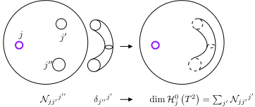
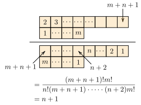
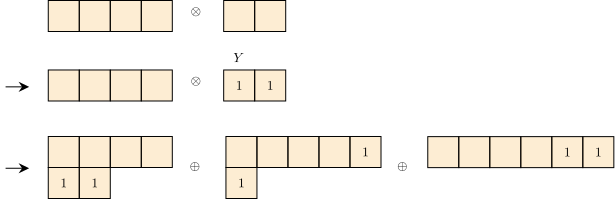

\gdef\red#1{{\color{cb8680}{#1}}} \gdef\green#1{{\color{4f8d63}{#1}}} \gdef\gray#1{{\color{gray}{#1}}} \gdef\purple#1{{\color{B189C6}{#1}}} \gdef\orange#1{{\color{dfa04b}{#1}}} \gdef\white#1{{\color{white}{#1}}}
Schur 定理：设 GGG 是群 (有限或无限)。
R2(g)X=XR1(g)∀g∈G\mathcal{R}_2(g) X = X \mathcal{R}_1(g) \qquad \forall g \in G R2(g)X=XR1(g)∀g∈G
则有如下结论，
舒尔引理：设 R\mathcal{R}R 是 GGG 的不可约、复表示，表示空间为 VVV。设 X:V→VX: V \to VX:V→V 是 VVV 到自身的线性映射，且满足
R(g)X=XR(g)∀g∈G\mathcal{R}(g)X = X \mathcal{R}(g) \qquad \forall g \in G R(g)X=XR(g)∀g∈G
则 X=λidX = \lambda \operatorname{id}X=λid，λ∈C\lambda \in \mathbb{C}λ∈C (包括 λ=0\lambda = 0λ=0，即 X=0X = 0X=0)。
表示矩阵 R(g)\mathcal{R}(g)R(g) 的矩阵元
R(g)ei=∑jnR(g)ijejn=dimR\mathcal{R}(g) e_i = \sum_{j}^{n} \mathcal{R}(g)_{ij} e_j \qquad n = \dim \mathcal{R} R(g)ei=j∑nR(g)ijejn=dimR
特征标
χR(g)≔trR(g)\chi_\mathcal{R}(g) \coloneqq \operatorname{tr} \mathcal{R}(g) χR(g):=trR(g)
f(g)=∑α∑ijfijαRij(α)(g)f(g) = \sum_{\alpha}\sum_{ij} f_{ij}^\alpha \mathcal{R}^{(\alpha)}_{ij}(g) f(g)=α∑ij∑fijαRij(α)(g)
f([g])=∑αfαχR(α)([g])f([g]) = \sum_{\alpha} f_\alpha \chi_{\mathcal{R}^{(\alpha)}}([g]) f([g])=α∑fαχR(α)([g])
有限群表示矩阵元与特征标的正交归一关系
⟨Ri~j~(β)∣Rij(α)⟩=1∣G∣∑gR(α)(g)ijR(β)(g)i~j~‾=1dimR(α)δαβδii~δjj~\langle \mathcal{R}^{(\beta)}_{\tilde i \tilde j}|\mathcal{R}^{(\alpha)}_{ij}\rangle = \frac{1}{|G|}\sum_g \mathcal{R}^{(\alpha)}(g)_{ij} \overline{\mathcal{R}^{(\beta)}(g)_{\tilde i \tilde j}} = \frac{1}{\dim \mathcal{R}^{(\alpha)}}\delta_{\alpha \beta} \delta_{i\tilde i}\delta_{j\tilde j } ⟨Ri~j~(β)∣Rij(α)⟩=∣G∣1g∑R(α)(g)ijR(β)(g)i~j~=dimR(α)1δαβδii~δjj~
⟨χR(α)∣χR(β)⟩=1∣G∣∑gχR(α)(g)χR(β)(g)‾=δαβ\langle \chi_{\mathcal{R}^{(\alpha)}}|\chi_{\mathcal{R}^{(\beta)}}\rangle = \frac{1}{|G|}\sum_{g}\chi_{\mathcal{R}^{(\alpha)}} (g) \overline{\chi_{\mathcal{R}^{(\beta)}}(g)} = \delta_{\alpha \beta} ⟨χR(α)∣χR(β)⟩=∣G∣1g∑χR(α)(g)χR(β)(g)=δαβ
判断表示是否不可约表示的充要条件
⟨χR∣χR⟩=1∣G∣∑g∣χR(g)∣2=1\langle \chi_\mathcal{R}|\chi_{\mathcal{R}}\rangle = \frac{1}{|G|}\sum_{g} |\chi_\mathcal{R}(g)|^2 = 1 ⟨χR∣χR⟩=∣G∣1g∑∣χR(g)∣2=1
对所有群元求和 (sum over group elements) 是很重要的操作：群函数、类函数的内积，正交归一关系
1∣G∣∑g∈Gf(g)\frac{1}{|G|}\sum_{g \in G} f(g) ∣G∣1g∈G∑f(g)
由于群结构，对群元求和有两个关键性质
离散群 GGG：
1∣G∣∑g∈Gf(g)f:G→C\frac{1}{|G|}\sum_{g \in G}f(g) \qquad f: G \to \mathbb{C} ∣G∣1g∈G∑f(g)f:G→C
平移不变性
上述求和具有左右平移不变性：对任意固定的 hhh 和任意 fff，
1∣G∣∑gf(gh)= 1∣G∣∑all (g′h−1)f(g′)=1∣G∣∑all g′f(g′)1∣G∣∑gf(hg)= 1∣G∣∑all (h−1g′)f(g′)=1∣G∣∑all g′f(g′)\begin{align*} \frac{1}{|G|} \sum_{g} f({\color{green}gh}) = & \ \frac{1}{|G|} \sum_{\text{all} ~ (g'h^{-1})} f({\color{green}g'}) = \frac{1}{|G|}\sum_{\text{all}~g'}f(g')\\ \frac{1}{|G|} \sum_{g} f({\color{green}hg}) = & \ \frac{1}{|G|} \sum_{\text{all} ~ (h^{-1}g')} f({\color{green}g'}) = \frac{1}{|G|}\sum_{\text{all}~g'}f(g') \end{align*}∣G∣1g∑f(gh)=∣G∣1g∑f(hg)= ∣G∣1all (g′h−1)∑f(g′)=∣G∣1all g′∑f(g′) ∣G∣1all (h−1g′)∑f(g′)=∣G∣1all g′∑f(g′)
归一化 当 f(g)=1f(g) = 1f(g)=1，则
1∣G∣∑g∈G1=1\frac{1}{|G|}\sum_{g \in G} 1 = 1 ∣G∣1g∈G∑1=1
对于紧李群：求和变积分
∫G[dg]f(g)=∫dnx⏟李群上某坐标J(x1,…,xn)⏟Jacobi 矩阵行列式f(x1,…,xn)\int_G {\color{orange}[dg]} f(g) = \int \underbrace{\color{orange}d^n x}_\text{李群上某坐标} \underbrace{{\color{orange}J(x_1, \ldots, x_n)}}_\text{Jacobi 矩阵行列式} f(x_1, \ldots, x_n) ∫G[dg]f(g)=∫李群上某坐标dnxJacobi 矩阵行列式J(x1,…,xn)f(x1,…,xn)
要求归一化
∫G[dg]=∫dnxJ(x1,…,xn)=1\int_G [dg] = \int d^n x J(x_1, \ldots, x_n) = 1 ∫G[dg]=∫dnxJ(x1,…,xn)=1
以及左右平移不变性
∫G[dg]f(hg)=∫G[dg]f(gh)=∫G[dg]f(g)∀f,∀h∈G\int_G [dg]f(hg) = \int_G [dg] f(gh) = \int_G [dg]f(g) \quad \forall f, \forall h \in G ∫G[dg]f(hg)=∫G[dg]f(gh)=∫G[dg]f(g)∀f,∀h∈G
满足归一化条件与左右不变性的李群积分测度 [dg]=dnxJ(x)[dg] = d^n x J(x)[dg]=dnxJ(x) 称为Haar 积分测度
对任意李群，Haar 测度都是唯一的，只要找到一个就可以收工了。
考虑 U(1)={u=eiθ ∣ θ∈[0,2π]}U(1) = \{u = e^{i \theta} \ | \ \theta \in [0, 2\pi]\}U(1)={u=eiθ ∣ θ∈[0,2π]}
定理
∫U(1)[du]f(u)=∫02πdθ2πf(eiθ)\int_{U(1)} {\color{orange}[du]} f(u) = \int_0^{2\pi} {\color{orange}\frac{d\theta}{2\pi}} f(e^{i\theta}) ∫U(1)[du]f(u)=∫02π2πdθf(eiθ)
Haar 测度 显然有归一性
∫U(1)[du]=∫02πdθ2π=1\int_{U(1)}[du] = \int_0^{2\pi} \frac{d\theta}{2\pi} = 1 ∫U(1)[du]=∫02π2πdθ=1
Haar 测度 左右平移不变性 (利用 eiθe^{i\theta}eiθ 的 2π2\pi2π 周期性)
∫U(1)[du]f(u0u)= ∫02πdθ2πf(ei(θ0+θ))=∫θ02π+θ0dθ2πf(eiθ)= ∫02πdθ2πf(eiθ)=∫U(1)[du]f(u)\begin{align*} \int_{U(1)}[du]f(u_0 u) = & \ \int_0^{2\pi}\frac{d\theta}{2\pi} f(e^{i(\theta_0 + \theta)}) = \int_{\theta_0}^{2\pi + \theta_0}\frac{d\theta}{2\pi}f(e^{i \theta})\\ = & \ \int_0^{2\pi}\frac{d\theta}{2\pi} f(e^{i\theta}) = \int_{U(1)}[du]f(u) \end{align*} ∫U(1)[du]f(u0u)== ∫02π2πdθf(ei(θ0+θ))=∫θ02π+θ02πdθf(eiθ) ∫02π2πdθf(eiθ)=∫U(1)[du]f(u)
定理：对于 SU(2)SU(2)SU(2)，Haar 测度由下面公式给出，
∫SU(2)[dU]f(U)= 14π2∫02πdφ∫0πsinθdθ∫02πsin2ω2dωf(U(n⃗,ω))\begin{align*} & \ \int_{SU(2)} [dU]f(U)\\ = & \ \frac{1}{4\pi^2}\int_0^{2\pi} d\varphi\int_0^{\pi} \sin \theta d\theta \int_0^{2\pi}\sin^2\frac{\omega}{2}d\omega f(U(\vec n, \omega)) \end{align*}= ∫SU(2)[dU]f(U) 4π21∫02πdφ∫0πsinθdθ∫02πsin22ωdωf(U(n,ω))
这其实是 (2π2)−1×(2\pi^2)^{-1} \times(2π2)−1× 单位三维球面 S3S^3S3 的标准体积积分。
三维球面可以用球坐标表达 (ω∈[0,2π],θ∈[0,π],φ∈[0,2π]\omega \in [0, 2\pi], \theta \in [0,\pi], \varphi \in [0,2\pi]ω∈[0,2π],θ∈[0,π],φ∈[0,2π])
x1= rsinω2sinθcosφ,x2= rsinω2sinθsinφx3= rsinω2cosθ,x4= rcosω2\begin{align*} x_1 = & \ r\sin\frac{\omega}{2}\sin\theta \cos\varphi, & x_2 = & \ r\sin\frac{\omega}{2}\sin\theta \sin \varphi\\ x_3 = & \ r\sin\frac{\omega}{2}\cos\theta, & x_4 = & \ r\cos\frac{\omega}{2} \end{align*}x1=x3= rsin2ωsinθcosφ, rsin2ωcosθ,x2=x4= rsin2ωsinθsinφ rcos2ω
R4\mathbb{R}^4R4 中的体积元为 (分离出 (4π2)−1(4\pi^2)^{-1}(4π2)−1)
d4x= det∂(x1,x2,x3x4)∂(ω,θ,φ,r)dωdθdφdr= 2π2r314π2sinθsin2ω2dφdθdωdr\begin{align*} d^4 x = & \ \det\frac{\partial (x_1, x_2, x_3 x_4)}{\partial(\omega, \theta, \varphi, r)} d\omega d\theta d\varphi dr\\ = & \ 2\pi^2r^3 {\color{orange}\frac{1}{4\pi^2} \sin \theta \sin^2 \frac{\omega}{2} d\varphi d\theta d\omega} dr \end{align*}d4x== det∂(ω,θ,φ,r)∂(x1,x2,x3x4)dωdθdφdr 2π2r34π21sinθsin22ωdφdθdωdr
R4\mathbb{R}^4R4 体积元
d4x=2π2r314π2sinθsin2ω2dφdθdωdrd^4 x = 2\pi^2r^3 {\color{orange}\frac{1}{4\pi^2} \sin \theta \sin^2 \frac{\omega}{2} d\varphi d\theta d\omega} dr d4x=2π2r34π21sinθsin22ωdφdθdωdr
单位 (r=1r = 1r=1) 三维球面体积元
dVS3=2π214π2sinθsin2ω2dφdθdω=2π2[dU]dV_{S^3} = 2\pi^2 {\color{orange}\frac{1}{4\pi^2} \sin \theta \sin^2 \frac{\omega}{2} d\varphi d\theta d\omega} = 2\pi^2 {\color{orange}[dU]} dVS3=2π24π21sinθsin22ωdφdθdω=2π2[dU]
Haar 积分体积元
[dU]=12π2dVS3[dU] = \frac{1}{2\pi^2} dV_{S^3} [dU]=2π21dVS3
倘若被积函数 f(U)f(U)f(U) 是类函数，比如特征标，则 fff 实际上只依赖 ω\omegaω
f(U(n⃗,ω))=f(ω)f(U(\vec n, \omega)) = f(\omega) f(U(n,ω))=f(ω)
此时 Haar 积分可以被简化
∫SU(2)[dU]f(U)= 14π2∫02πsin2ω2dω∫0πdθsinθ∫02πdφf(ω)= 2π×24π2∫02πsin2ω2f(ω)dω= 1π∫02πsin2ω2f(ω)dω\begin{align*} \int_{SU(2)}[dU] f(U) = & \ \frac{1}{4\pi^2} \int_0^{2\pi} \sin^2\frac{\omega}{2} d\omega \int_0^\pi d\theta \sin \theta \int_0^{2\pi}d\varphi f(\omega)\\ = & \ \frac{2\pi \times 2}{4\pi^2} \int_0^{2\pi} \sin^2 \frac{\omega}{2}f(\omega)d\omega\\ = & \ \purple{\frac{1}{\pi} \int_0^{2\pi} \sin^2 \frac{\omega}{2}f(\omega) d\omega} \end{align*}∫SU(2)[dU]f(U)=== 4π21∫02πsin22ωdω∫0πdθsinθ∫02πdφf(ω) 4π22π×2∫02πsin22ωf(ω)dω π1∫02πsin22ωf(ω)dω
定理：SU(2)SU(2)SU(2) 表示 R\mathcal{R}R 是不可约表示的充分必要条件是
∫SU(2)[dU]χR(U)χR(U)‾=1\int_{SU(2)} [dU] \chi_\mathcal{R}(U) \overline{\chi_\mathcal{R}(U)} = 1 ∫SU(2)[dU]χR(U)χR(U)=1
定理：若 R\mathcal{R}R，R′\mathcal{R}'R′ 是 SU(2)SU(2)SU(2) 的不等价的不可约表示，则
∫SU(2)[dU]χR(U)χR′(U)‾=0\int_{SU(2)} [dU] \chi_\mathcal{R}(U) \overline{\chi_{\mathcal{R}'}(U)} = 0 ∫SU(2)[dU]χR(U)χR′(U)=0
两个定理不作证明
SU(2)SU(2)SU(2) 天然线性地作用在 C2\mathbb{C}^2C2 上：对任意 U∈SU(2)U\in SU(2)U∈SU(2)
(zw)→U(z′w′)=(ab−bˉaˉ)(zw)(zw)→U−1(z′′w′′)=(aˉ−bbˉa)(zw)\begin{pmatrix} z \\ w \end{pmatrix} \xrightarrow{U} \begin{pmatrix} z' \\ w' \end{pmatrix} = \begin{pmatrix} a & b \\ - \bar b & \bar a \end{pmatrix}\begin{pmatrix} z \\ w \end{pmatrix} \\ \begin{pmatrix} z \\ w \end{pmatrix} \xrightarrow{U^{-1}} \begin{pmatrix} z'' \\ w'' \end{pmatrix} = \begin{pmatrix} \bar a & - b \\ \bar b & a \end{pmatrix}\begin{pmatrix} z \\ w \end{pmatrix}(zw)U(z′w′)=(a−bˉbaˉ)(zw)(zw)U−1(z′′w′′)=(aˉbˉ−ba)(zw)
C2\mathbb{C}^2C2 上述 SU(2)SU(2)SU(2) 对 C2\mathbb{C}^2C2 的天然作用其实就形成了一个最基本的表示。见下文。
f(zw)=∑k=0nakzn−kwkf \begin{pmatrix} z \\ w \end{pmatrix} = \sum_{k = 0}^{n}a_kz^{n - k} w^{k} f(zw)=k=0∑nakzn−kwk
定义 UUU 对函数 fff 的线性作用 f→Uff \to Uff→Uf，
f(zw)→U(Uf)⏟新函数(zw)≔f(U−1(zw))f \begin{pmatrix} z \\ w \end{pmatrix} \xrightarrow{U} \underbrace{{\color{green}(Uf)}}_\text{新函数}\begin{pmatrix} z \\ w \end{pmatrix} \coloneqq f\left(U^{-1}\begin{pmatrix} z \\ w \end{pmatrix}\right)f(zw)U新函数(Uf)(zw):=f(U−1(zw))
逆
定理：上述作用构成线性群作用，是群 SU(2)SU(2)SU(2) 的线性表示
群作用 检查保群乘法性：U1,U2U_1, U_2U1,U2 先后作用等于 U1U2U_1 U_2U1U2 一次作用
(U1(U2f))(zw)= (U2f)(U1−1(zw))= f(U2−1U1−1(zw))=f((U1U2)−1(zw))= ((U1U2)f)(zw)\begin{align*} (U_1 {\color{orange}(U_2 f)}) \begin{pmatrix} z \\ w \end{pmatrix} = & \ {\color{orange}(U_2f)}\left(U_1^{-1}\begin{pmatrix} z\\w \end{pmatrix}\right)\\ = & \ f\left( U_2^{-1}U_1^{-1} \begin{pmatrix} z \\ w \end{pmatrix} \right) = f\left( (U_1U_2)^{-1} \begin{pmatrix} z \\ w \end{pmatrix} \right)\\ = & \ \Big((U_1U_2)f \Big) \begin{pmatrix} z \\ w \end{pmatrix} \end{align*}(U1(U2f))(zw)=== (U2f)(U1−1(zw)) f(U2−1U1−1(zw))=f((U1U2)−1(zw)) ((U1U2)f)(zw)
定义：上述 SU(2)SU(2)SU(2) 对 Cn+1\mathbb{C}^{n + 1}Cn+1 的作用记为 线性表示 R(n)\mathcal{R}^{(n)}R(n)。
选择 Cn+1\mathbb{C}^{n + 1}Cn+1 基底为一组 n+1n+1n+1 个单项式 ψk\psi_kψk，ψk(zw)≔zn−kwk\psi_k(\substack{z\\w}) \coloneqq z^{n - k}w^kψk(zw):=zn−kwk，
ψ0(zw)=zn, ψ1(zw)=zn−1w, ψ2(zw)=zn−2w2, …, ψn(zw)=wn\psi_0\begin{pmatrix} z\\w \end{pmatrix} = z^n, \ \psi_1\begin{pmatrix} z\\w \end{pmatrix} = z^{n - 1}w, \ \psi_2\begin{pmatrix} z\\w \end{pmatrix} = z^{n - 2}w^2, \ \ldots, \ \psi_n\begin{pmatrix} z\\w \end{pmatrix} = w^n ψ0(zw)=zn, ψ1(zw)=zn−1w, ψ2(zw)=zn−2w2, …, ψn(zw)=wn
例 当 n=1n = 1n=1，ψ0(zw)=z\psi_0\big(\substack{z\\w}\big) = zψ0(zw)=z，ψ1(zw)=w\psi_1\big(\substack{z\\w}\big) = wψ1(zw)=w。
当 n=2n = 2n=2，ψ0(zw)=z2\psi_0\big(\substack{z\\w}\big) = z^2ψ0(zw)=z2，ψ1(zw)=zw\psi_1\big(\substack{z\\w}\big) = z wψ1(zw)=zw，ψ2(zw)=w2\psi_2\big(\substack{z\\w}\big) = w^2ψ2(zw)=w2。
例子：取 U=U(e⃗3,ω)U = U(\vec e_3, \omega)U=U(e3,ω)，则
U−1(zw)=(e−i2ωe+i2ω)(zw)=(e−i2ωze+i2ωw)U^{-1}\begin{pmatrix} z \\ w \end{pmatrix} = \begin{pmatrix} e^{- \frac{i}{2}\omega} \\ & e^{+ \frac{i}{2}\omega} \end{pmatrix}\begin{pmatrix} z \\ w \end{pmatrix} = \begin{pmatrix} e^{- \frac{i}{2}\omega}z \\ e^{+ \frac{i}{2}\omega} w \end{pmatrix}U−1(zw)=(e−2iωe+2iω)(zw)=(e−2iωze+2iωw)
于是，在 UUU 作用下，基底 ψk\psi_kψk 发生变化，
(Uψk)(zw)= ψk(U−1(zw))=ψk(e−i2ωze+i2ωw)= (e−i2ωz)n−k(e+i2ωw)k=e+i2ω(2k−n)ψk(zw)\begin{align*} (U\psi_k)\begin{pmatrix} z \\ w \end{pmatrix} = & \ \psi_k \left(U^{-1}\begin{pmatrix} z \\ w \end{pmatrix}\right) = \psi_k \begin{pmatrix} e^{- \frac{i}{2}\omega}z \\ e^{+ \frac{i}{2}\omega}w \end{pmatrix}\\ = & \ (e^{- \frac{i}{2}\omega}z)^{n - k} (e^{+ \frac{i}{2}\omega}w)^k = e^{+ \frac{i}{2}\omega(2k - n)} \psi_k\begin{pmatrix} z\\w \end{pmatrix} \end{align*}(Uψk)(zw)== ψk(U−1(zw))=ψk(e−2iωze+2iωw) (e−2iωz)n−k(e+2iωw)k=e+2iω(2k−n)ψk(zw)
即
R(n)(U(e⃗3,ω))ψk=ei2ω(2k−n)ψk\mathcal{R}^{(n)}(U(\vec e_3, \omega)) \psi_k = e^{\frac{\text{i}}{2}\omega(2k - n)}\psi_k R(n)(U(e3,ω))ψk=e2iω(2k−n)ψk
因此，相应的表示矩阵 (的矩阵元)
R(n)(U(e⃗3,ω))kℓ=δkℓei2ω(2k−n)\mathcal{R}^{(n)}(U(\vec e_3, \omega))_{k \ell} = \delta_{k \ell} e^{ \frac{\text{i}}{2}\omega(2k - n)} R(n)(U(e3,ω))kℓ=δkℓe2iω(2k−n)
R(n)(U(e⃗3,ω))=(e−i2nωei2ω(2−n)⋱e+i2nω)\mathcal{R}^{(n)}(U(\vec e_3, \omega)) = \begin{pmatrix} e^{- \frac{i}{2}n\omega}\\ & e^{\frac{i}{2}\omega(2 - n)} \\ & & \ddots \\ &&& e^{+\frac{i}{2}n\omega} \end{pmatrix} R(n)(U(e3,ω))=e−2inωe2iω(2−n)⋱e+2inω
R(n)(U(e⃗3,ω))=(e+i2nωe+i2ω(n−2)⋱e−i2nω)\mathcal{R}^{(n)}(U(\vec e_3, \omega)) = \begin{pmatrix} e^{+ \frac{i}{2}n\omega}\\ & e^{+ \frac{i}{2}\omega(n - 2)} \\ & & \ddots \\ &&& e^{-\frac{i}{2}n\omega} \end{pmatrix} R(n)(U(e3,ω))=e+2inωe+2iω(n−2)⋱e−2inω
物理学家常用记号替代 n,kn, kn,k：
自旋 j≔n2j \coloneqq \frac{n}{2}j:=2n，
j=0,12,1,32,2,…∈12Nj = 0, \frac{1}{2}, 1, \frac{3}{2}, 2, \ldots \in \frac{1}{2}\mathbb{N} j=0,21,1,23,2,…∈21N
磁量子数 m=12(2k−n)m = \frac{1}{2}(2k - n)m=21(2k−n)，
m=−j,−j+1,…,j−1,jm = -j, -j + 1, \ldots, j - 1, j m=−j,−j+1,…,j−1,j
重新标记 Rj≔R(n=2j)\mathcal{R}_j \coloneqq \mathcal{R}^{(n = 2j)}Rj:=R(n=2j)，dimRj=n+1=2j+1\dim \mathcal{R}_j = n + 1 = 2j + 1dimRj=n+1=2j+1
旧基底 ψk=0,1,…,n=zn−kwk\psi_{k = 0, 1, \ldots, n} = z^{n - k}w^kψk=0,1,…,n=zn−kwk 重新命名为
ψjm≔#zj−mwj+m\psi_{jm}\coloneqq \# z^{j - m}w^{j + m} ψjm:=#zj−mwj+m
基底 当 j=12j = \frac{1}{2}j=21，ψ12,−12=z12−(−12)w12−12=z\psi_{\frac{1}{2}, - \frac{1}{2}} = z^{\frac{1}{2} - (-\frac{1}{2})} w^{\frac{1}{2} - \frac{1}{2}} = zψ21,−21=z21−(−21)w21−21=z，ψ12,12=w\psi_{\frac{1}{2}, \frac{1}{2}} = wψ21,21=w。
当 j=1j = 1j=1，
ψ1,−1=z2ψ1,0=zwψ1,1=w2\psi_{1, -1} = z^2 \qquad \psi_{1, 0} = z w \qquad \psi_{1, 1} = w^2 ψ1,−1=z2ψ1,0=zwψ1,1=w2
Rj(U(e⃗3,ω))ψjm=eimωψjmR_j(U(\vec e_3, \omega)) \psi_{jm} = e^{\text{i} m\omega}\psi_{jm} Rj(U(e3,ω))ψjm=eimωψjm
Rj(U(e⃗3,ω))=(eijωei(j−1)ω⋱e−i(j−1)ωe−ijω)\mathcal{R}_j(U(\vec e_3, \omega)) = \begin{pmatrix} e^{\text{i}j\omega}\\ & e^{\text{i}(j - 1)\omega}\\ && \ddots\\ &&& e^{-\text{i}(j - 1)\omega}\\ &&&& e^{-\text{i}j\omega} \end{pmatrix} Rj(U(e3,ω))=eijωei(j−1)ω⋱e−i(j−1)ωe−ijω
排列顺序
如果反过来排列 (ψj,−j,⋯ ,ψj,j)(\psi_{j, -j}, \cdots, \psi_{j, j})(ψj,−j,⋯,ψj,j)，则矩阵变成
Rj(U(e⃗3,ω))=(e−ijωe−i(j−1)ω⋱ei(j−1)ωeijω)\mathcal{R}_j(U(\vec e_3, \omega)) = \begin{pmatrix} e^{-\text{i}j\omega}\\ & e^{-\text{i}(j - 1)\omega}\\ && \ddots\\ &&& e^{\text{i}(j - 1)\omega}\\ &&&& e^{\text{i}j\omega} \end{pmatrix} Rj(U(e3,ω))=e−ijωe−i(j−1)ω⋱ei(j−1)ωeijω
χRj(U(n⃗,ω))= χRj(U(e⃗3,ω))=trdiag(eimω ∣ m=−j,…,j)= ∑m=−jjeimω=e−ijω(1−eiω(2j+1))1−eiω= e−ijω−eiω(j+1)1−eiω=e−i(j+12)ω−ei(j+12)ωe−iω2−e+iω2= sin(j+12)ωsin12ω\begin{align*} \chi_{\mathcal{R}_j}(U(\vec n, \omega)) = & \ \chi_{\mathcal{R}_j}(U(\vec e_3, \omega)) = \operatorname{tr}\operatorname{diag}(e^{\text{i} m \omega} \ | \ m = -j, \ldots, j)\\ = & \ \sum_{m = -j}^{j}e^{im \omega} = \frac{e^{-\text{i} j \omega}(1 - e^{\text{i}\omega(2j + 1)})}{1 - e^{\text{i} \omega}}\\ = & \ \frac{e^{-\text{i} j \omega} - e^{\text{i}\omega(j + 1)}}{1 - e^{\text{i} \omega}} = \frac{e^{- \text{i} (j + \frac{1}{2})\omega} - e^{\text{i} (j + \frac{1}{2})\omega}}{e^{- \text{i}\frac{\omega}{2}} - e^{+ \text{i}\frac{\omega}{2}}}\\ = & \ \frac{\sin(j + \frac{1}{2})\omega}{\sin\frac{1}{2}\omega} \end{align*}χRj(U(n,ω))==== χRj(U(e3,ω))=trdiag(eimω ∣ m=−j,…,j) m=−j∑jeimω=1−eiωe−ijω(1−eiω(2j+1)) 1−eiωe−ijω−eiω(j+1)=e−i2ω−e+i2ωe−i(j+21)ω−ei(j+21)ω sin21ωsin(j+21)ω
检查等价性与可约性：类函数 Haar 积分，j1,j2∈12Nj_1, j_2 \in \frac{1}{2}\mathbb{N}j1,j2∈21N
1π∫02πsin2ω2dωχRj1(ω)χRj2(ω)‾= 1π∫02πsin2ω2dωsin(j1+12)ωsinω2sin(j2+12)ωsinω2= {12π[sin2π(j1−j2)j1−j2−sin2π(j1+j2)1+j1+j2]=0,j1≠j21,j1=j2\begin{align*} & \ \frac{1}{\pi} \int_0^{2\pi} \sin^2 \frac{\omega}{2} d\omega \chi_{\mathcal{R}_{j_1}}(\omega) \overline{\chi_{\mathcal{R}_{j_2}}(\omega)}\\ = & \ \frac{1}{\pi}\int_0^{2\pi} {\color{orange}\sin^2\frac{\omega}{2}} d\omega \frac{\sin(j_1 + \frac{1}{2})\omega}{{\color{orange}\sin \frac{\omega}{2}}} \frac{\sin(j_2 + \frac{1}{2})\omega}{{\color{orange}\sin \frac{\omega}{2}}}\\ = & \ \left\{\begin{array}{cc} \frac{1}{2\pi} \left[\frac{\sin 2\pi(j_1 - j_2)}{j_1 - j_2} - \frac{\sin 2\pi(j_1 + j_2)}{1 + j_1 + j_2}\right] = {\red{0}}, & j_1 \ne j_2\\ 1, & j_1 = j_2 \end{array} \right. \end{align*}== π1∫02πsin22ωdωχRj1(ω)χRj2(ω) π1∫02πsin22ωdωsin2ωsin(j1+21)ωsin2ωsin(j2+21)ω {2π1[j1−j2sin2π(j1−j2)−1+j1+j2sin2π(j1+j2)]=0,1,j1=j2j1=j2
Rj\mathcal{R}_jRj 互不等价，且均为不可约表示。
∫SU(2)[dU]χRj1(U)χRj2(U)‾=δj1j2\int_{SU(2)}[dU] \chi_{\mathcal{R}_{j_1}}(U) \overline{\chi_{\mathcal{R}_{j_2}}(U)} = \delta_{j_1 j_2} ∫SU(2)[dU]χRj1(U)χRj2(U)=δj1j2
∑j∈12NχRj(ω)χRj(ω′)‾=K(ω−ω′)\sum_{j \in \frac{1}{2}\mathbb{N}} \chi_{\mathcal{R}_j}(\omega)\overline{\chi_{\mathcal{R}_j}(\omega')} = K(\omega - \omega') j∈21N∑χRj(ω)χRj(ω′)=K(ω−ω′)
1π∫02πdω′sin2ω′2K(ω−ω′)f(ω′)=f(ω)\frac{1}{\pi}\int_0^{2\pi}d\omega' \sin^2 \frac{\omega'}{2} K(\omega - \omega') f(\omega') = f(\omega) π1∫02πdω′sin22ω′K(ω−ω′)f(ω′)=f(ω)
考虑自旋 j=0j = 0j=0，对应 n=0n = 0n=0
Rj=0\mathcal{R}_{j = 0}Rj=0：SU(2)SU(2)SU(2) 的平凡表示/标量 (scalar) 表示/单重态 (singlet)
Rj=0(U)X=X∀X∈Rj,∀U∈SU(2)\mathcal{R}_{j = 0}(U) X = X \qquad \forall X \in \mathcal{R}_j, \quad \forall U \in SU(2) Rj=0(U)X=X∀X∈Rj,∀U∈SU(2)
dimRj=0=2j+1=1\dim \mathcal{R}_{j = 0} = 2j + 1 = 1dimRj=0=2j+1=1
考虑 j=1/2j = 1/2j=1/2，对应 n=1n = 1n=1
Rj=12\mathcal{R}_{j = \frac{1}{2}}Rj=21：SU(2)SU(2)SU(2) 的基本 (fundamental) 表示/定义 (defining) 表示/旋量 (spinor) 表示/二重态 (doublet)
dimRj=12=2j+1=2\dim \mathcal{R}_{j = \frac{1}{2}} = 2 j + 1 = 2dimRj=21=2j+1=2。
设 eα=1,2e_{\alpha = 1, 2}eα=1,2 为某套基底。则任意 X∈Rj=12X \in \mathcal{R}_{j = \frac{1}{2}}X∈Rj=21 都可以写成
X=Xαeα=X1e1+X2e2X = X^\alpha e_\alpha = X^1 e_1 + X^2 e_2 X=Xαeα=X1e1+X2e2
UUU 的作用
Xα→(UX)α=UαβXβU∈SU(2)X^\alpha \to (U X)^\alpha = U^\alpha{_\beta}X^\beta \qquad U \in SU(2) Xα→(UX)α=UαβXβU∈SU(2)
考虑 ϵαβ\epsilon^{\alpha \beta}ϵαβ 与 ϵαβ\epsilon_{\alpha \beta}ϵαβ
ϵ12= −ϵ21=1ϵ12=−ϵ21=−1ϵ11= ϵ22=ϵ11=ϵ22=0\begin{align*} \epsilon^{12} = & \ - \epsilon^{21} = 1 \qquad \epsilon_{12} = - \epsilon_{21} = -1\\ \epsilon^{11} = & \ \epsilon^{22} = \epsilon_{11} = \epsilon_{22} = 0 \end{align*}ϵ12=ϵ11= −ϵ21=1ϵ12=−ϵ21=−1 ϵ22=ϵ11=ϵ22=0
直接验证
ϵαβϵβγ=δαγϵαβϵβγ=δαγ\epsilon^{\alpha \beta}\epsilon_{\beta \gamma} = \delta{^\alpha}_{\gamma} \qquad \epsilon_{\alpha \beta}\epsilon^{\beta \gamma} = \delta{_\alpha}^{\gamma} ϵαβϵβγ=δαγϵαβϵβγ=δαγ
对 ∀X,Y∈Rj=12\forall X, Y \in \mathcal{R}_{j = \frac{1}{2}}∀X,Y∈Rj=21，定义 「內积」
⟨X,Y⟩≔−ϵαβXαYβ=X1Y2−X2Y1\langle X, Y \rangle \coloneqq - \epsilon_{\alpha \beta}X^\alpha Y^\beta = X^1 Y^2 - X^2 Y^1 ⟨X,Y⟩:=−ϵαβXαYβ=X1Y2−X2Y1
反对称 上述内积具有反对称性，⟨X,Y⟩=−⟨Y,X⟩\langle X, Y \rangle = - \langle Y, X \rangle⟨X,Y⟩=−⟨Y,X⟩
负号只是个人喜好
定理：⟨UX,UY⟩=⟨X,Y⟩\langle UX, UY \rangle = \langle X, Y \rangle⟨UX,UY⟩=⟨X,Y⟩，∀U∈SU(2)\forall U \in SU(2)∀U∈SU(2)
证明 直接计算，记 X′=UXX' = UXX′=UX，Y′=UYY' = UYY′=UY
⟨UX,UY⟩= X′1Y′2−X′2Y′1= (U1αXα)(U2βYβ)−(U2αXα)(U1βYβ)= (U11X1+U12X2)(U21Y1+U22Y2) −(U21X1+U22X2)(U11Y1+U12Y2)\begin{align*} \langle UX, UY \rangle = & \ X'^1 Y'^2 - X'^2 Y'^1\\ = & \ (U^1{_\alpha}X^\alpha) (U^2{_\beta} Y^\beta) - (U^2{_\alpha}X^\alpha) (U^1{_\beta} Y^\beta)\\ = & \ (U^1{_1}X^1 + U^1{_2}X^2)(U^2{_1}Y^1 + U^2{_2}Y^2)\\ & \ - (U^2{_1}X^1 + U^2{_2}X^2)(U^1{_1}Y^1 + U^1{_2}Y^2) \end{align*}⟨UX,UY⟩=== X′1Y′2−X′2Y′1 (U1αXα)(U2βYβ)−(U2αXα)(U1βYβ) (U11X1+U12X2)(U21Y1+U22Y2) −(U21X1+U22X2)(U11Y1+U12Y2)
证明 8 项中，有 4 项相互抵消，留下
= U11U22X1Y2+U12U21X2Y1 −U21U12X1Y2−U22U11X2Y1= U11U22(X1Y2−X2Y1)−U21U12(X1Y2−X2Y1)= detU×⟨X,Y⟩=⟨X,Y⟩\begin{align*} = & \ U^1{_1}U^2{_2}X^1 Y^2 + U^1{_2}U^2{_1}X^2 Y^1\\ & \ - U^2{_1}U^1{_2}X^1 Y^2 - U^2{_2}U^1{_1}X^2 Y^1\\ = & \ U^1{_1}U^2{_2} {\color{orange}(X^1 Y^2 - X^2 Y^1)} - U^2{_1}U^1{_2} {\color{orange}(X^1 Y^2 - X^2 Y^1)}\\ = & \ \det U \times {\color{orange}\langle X, Y \rangle} = \langle X, Y \rangle \end{align*}=== U11U22X1Y2+U12U21X2Y1 −U21U12X1Y2−U22U11X2Y1 U11U22(X1Y2−X2Y1)−U21U12(X1Y2−X2Y1) detU×⟨X,Y⟩=⟨X,Y⟩
因此，从 Rj=12\mathcal{R}_{j = \frac{1}{2}}Rj=21 的元素 X,YX, YX,Y 可以构造出 SU(2)SU(2)SU(2) 标量，
−ϵαβXαYβ- \epsilon_{\alpha \beta} X^\alpha Y^\beta −ϵαβXαYβ
ϵαβ\epsilon_{\alpha\beta}ϵαβ 一定程度上是一种反对称的度规，可以用于升降指标、指标缩并。
Rj=1\mathcal{R}_{j = 1}Rj=1：SU(2)SU(2)SU(2) 的三重态表示/SO(3)SO(3)SO(3) 矢量表示/伴随表示 (adjoint representation)
伴随作用 考虑 x^≔∑a=13xaσa\hat x \coloneqq \sum_{a = 1}^{3} x_a \sigma_ax^:=∑a=13xaσa，则
Ux^U−1=∑a=13xa′σaxa′=R(U)abxbU \hat x U^{-1} = \sum_{a = 1}^{3} x'_a \sigma_a \qquad x'_a = R(U)_{ab}x_b Ux^U−1=a=1∑3xa′σaxa′=R(U)abxb
通过伴随作用 x^→Ux^U−1\hat x \to U \hat x U^{-1}x^→Ux^U−1 诱导三维矢量变换 xa→xa′x_a \to x'_axa→xa′。
SU(2)SU(2)SU(2) 李代数 由 Pauli 矩阵 σa\sigma_aσa 作为基底张成的线性空间，构成 SU(2)SU(2)SU(2) 的李代数 su(2)\mathfrak{su}(2)su(2)。这个空间形成 SU(2)SU(2)SU(2) 的三维伴随表示的表示空间。
一般李代数 任意李群 GGG 必然有一个维度为 dimG\dim GdimG 的特殊表示称为伴随表示 g\mathfrak{g}g。这个表示反映了李群的核心结构。这个表示自身同时形成一种新的代数结构，称为 李代数 (Lie algebra)。
考虑 j∈Zj \in \mathbb{Z}j∈Z。则
Rj(U(e⃗3,ω))=diag(eimω)m=−j,…,+j∈Z⇒ Rj(U(e⃗3,0))=Rj(U(e⃗3,2π))⇒ Rj(1)=Rj(−1)\begin{align*} & \ \mathcal{R}_j (U(\vec e_3, \omega)) = \operatorname{diag}(e^{i m \omega})_{m = - j, \ldots, + j \in \mathbb{Z}}\\ \Rightarrow & \ \mathcal{R}_j(U(\vec e_3, 0)) = \mathcal{R}_j(U(\vec e_3, 2\pi))\\ \Rightarrow & \ \mathcal{R}_j(\mathbf{1}) = \mathcal{R}_j( - \mathbf{1}) \end{align*}⇒⇒ Rj(U(e3,ω))=diag(eimω)m=−j,…,+j∈Z Rj(U(e3,0))=Rj(U(e3,2π)) Rj(1)=Rj(−1)
因此，Rj∈Z\mathcal{R}_{j \in \mathbb{Z}}Rj∈Z 是非忠实表示。
当 j∈Z+12j \in \mathbb{Z} + \frac{1}{2}j∈Z+21，
Rj(1)=−Rj(−1)\mathcal{R}_j(\mathbf{1}) = - \mathcal{R}_j( - \mathbf{1}) Rj(1)=−Rj(−1)
可以证明，Rj∈Z+12\mathcal{R}_{j \in \mathbb{Z} + \frac{1}{2}}Rj∈Z+21 是忠实表示。
Rj∈Z+12\mathcal{R}_{j \in \mathbb{Z} + \frac{1}{2}}Rj∈Z+21 的矢量在 −1- \mathbf{1}−1 作用下发生非平凡变换：带非平凡的 Z2\mathbb{Z}_2Z2-荷
Rj(−1)v=−v\mathcal{R}_{j}(- \mathbf{1}) v = - v Rj(−1)v=−v
Z2\mathbb{Z}_2Z2 Z2={1,−1}⊂SU(2)\mathbb{Z}_2 = \{\mathbf{1}, - \mathbf{1}\} \subset SU(2)Z2={1,−1}⊂SU(2)，是 SU(2)SU(2)SU(2) 的中心。
SO(3)SO(3)SO(3) 为特殊正交 3×33 \times 33×3 矩阵：(RT)abRbc=RbaRbc=δac(R^T)_{ab} R_{bc} = R_{ba}R_{bc} = \delta_{ac}(RT)abRbc=RbaRbc=δac
设 R3\mathbb{R}^3R3 有正交归一基底 eae_aea，则
X=Xaea∀X∈R3X = X^a e_a \qquad \forall X \in \mathbb{R}^3 X=Xaea∀X∈R3
考虑对 X∈R3X \in \mathbb{R}^3X∈R3 的分量 XaX^aXa 做 R(n⃗,ω)R(\vec n, \omega)R(n,ω) 变换
Xa→X′a=R(n⃗,ω)abXb≔RabXbX^a \to X'^a = R(\vec n, \omega)_{ab}X^b \coloneqq {\color{orange}R_{ab} X^b} Xa→X′a=R(n,ω)abXb:=RabXb
于是
X=Xaea→X′=RabXbea≔Xbeb′⇒ 等价基底变换 eb′=Rabea\begin{align*} & \ X = X^a e_a \to X' = {\color{orange}R_{ab} X^b} e_a {\color{green}\coloneqq X^b e'_b}\\ \Rightarrow& \ \text{等价基底变换} \ e'_b = R_{ab}e_a \end{align*}⇒ X=Xaea→X′=RabXbea:=Xbeb′ 等价基底变换 eb′=Rabea
下面研究电子自旋本征态
电子自旋角动量算符 sa=ℏ2σas_a = \frac{\hbar}{2}\sigma_asa=2ℏσa 沿着 eae_aea 测量角动量：
eb→eb′=Rabeasb→sb′=Rabsae_b \to e'_b = R_{ab} e_a \qquad s_b \to s'_b = R_{ab}s_a eb→eb′=Rabeasb→sb′=Rabsa
RabR_{ab}Rab 可以用 Pauli 矩阵与 UUU 表达：
Rab=12tr(U−1σaUσb)R_{ab} = \frac{1}{2}\operatorname{tr} (U^{-1} \sigma_a U \sigma_b) Rab=21tr(U−1σaUσb)
(sb′)αβ=(Rabsa)αβ= 12tr(U−1σaUσb)[ℏ2(σa)αβ]= ℏ212(σa)γδ(UσbU−1)δγ(σa)αβ= ℏ212(UσbU−1)δγ(−δαβδγδ+2δβγδαδ)= 0+ℏ2(UσbU−1)αβ\begin{align*} (s'_b)_{\alpha \beta} = (\purple{R_{ab}}s_a)_{\alpha \beta} = & \ \purple{\frac{1}{2} \operatorname{tr} (U^{-1}\sigma_a U \sigma_b)} \left[\frac{\hbar}{2} (\sigma_a)_{\alpha \beta}\right]\\ = & \ \frac{\hbar}{2} \frac{1}{2} {\color{orange}(\sigma_a)_{\gamma \delta}} (U \sigma_b U^{-1})_{\delta \gamma} {\color{orange}(\sigma_a)_{\alpha \beta}}\\ = & \ \frac{\hbar}{2} \frac{1}{2} (U \sigma_b U^{-1})_{\delta \gamma} {\color{orange}(- \delta_{\alpha \beta}\delta_{\gamma \delta} + 2 \delta_{\beta \gamma} \delta_{\alpha \delta})}\\ = & \ 0 + \frac{\hbar}{2} (U\sigma_b U^{-1})_{\alpha \beta} \end{align*}(sb′)αβ=(Rabsa)αβ==== 21tr(U−1σaUσb)[2ℏ(σa)αβ] 2ℏ21(σa)γδ(UσbU−1)δγ(σa)αβ 2ℏ21(UσbU−1)δγ(−δαβδγδ+2δβγδαδ) 0+2ℏ(UσbU−1)αβ
总结
sb′=Rabsa=UsbU−1s'_b = R_{ab}s_a = U s_b U^{-1} sb′=Rabsa=UsbU−1
双重身份 体现了 sbs_bsb 的双重身份：既是“矢量” (由 a,ba, ba,b 指标显示)，又是“算符” (作用在一个二维希尔伯特空间上)
sbs_bsb 的本征态 ψ\psiψ，sb′{\color{orange}s'_b}sb′ 的本征态 ψ′\psi'ψ′：
UsbU−1Uψ=Usbψ=λUψ⇒ψ′=Uψ{\color{orange}U s_b U^{-1}} U \psi = Us_b \psi = \lambda U\psi \qquad \Rightarrow \qquad \psi' = U \psi UsbU−1Uψ=Usbψ=λUψ⇒ψ′=Uψ
总结：位置空间 R3\mathbb{R}^3R3 中作 SO(3)SO(3)SO(3) 转动 X→R(U,ω)XX \to R(U, \omega)XX→R(U,ω)X，诱导角动量本征态 ψ\psiψ 做 SU(2)SU(2)SU(2) 变换 ψ→Uψ\psi \to U \psiψ→Uψ。ψ\psiψ 相对于 XXX 称为 SO(3)SO(3)SO(3) 旋量
旋量 旋量总是相对于一个 "位置空间" Rn\mathbb{R}^nRn 而言的。
当 Rn\mathbb{R}^nRn 中作 SO(n)SO(n)SO(n) 转动，ψ\psiψ 跟随做 Spin(n)=SO(n)^\operatorname{Spin}(n) = \widehat{SO(n)}Spin(n)=SO(n) 变换，则称 ψ\psiψ 为 SO(n)SO(n)SO(n)-旋量。
考虑 ω∈[0,2π]\omega \in [0, 2\pi]ω∈[0,2π] 以及一系列转动 R(n⃗,ω)R(\vec n, \omega)R(n,ω)
SO(3)SO(3)SO(3) 转动以及诱导 SU(2)SU(2)SU(2) 变换，
X→R(n⃗,ω)Xψ→U(n⃗,ω)ψX \to R(\vec n, \omega) X \qquad \psi \to U(\vec n, \omega) \psi X→R(n,ω)Xψ→U(n,ω)ψ
当 ω\omegaω 从零抵达 2π2\pi2π：XXX 转一圈回到原值 XXX，但是 ψ→−ψ\psi \to - \psiψ→−ψ。
2π2\pi2π 对任意 n⃗\vec nn，U(n⃗,2π)=−12×2U(\vec n, 2\pi) = - \mathbf{1}_{2 \times 2}U(n,2π)=−12×2。
需要转两圈 ψ\psiψ 才回到原值。
给定群 (有限群、离散群或李群均可) GGG 的任意两个表示 R1,R2\mathcal{R}_1, \mathcal{R}_2R1,R2 (表示空间 V1,V2V_1, V_2V1,V2)
定义 GGG 的 (以 V1⊕V2V_1 \oplus V_2V1⊕V2 为表示空间) 直和表示 R1⊕R2\mathcal{R}_1 \oplus \mathcal{R}_2R1⊕R2，
(R1⊕R2)(g)(v1⊕v2)=R1(g)v1⊕R2(g)v2∈V1⊕V2(\mathcal{R}_1 \oplus \mathcal{R}_2)(g)(v_1 \oplus v_2) = \mathcal{R}_1(g)v_1 \oplus \mathcal{R}_2(g)v_2 \in V_1 \oplus V_2 (R1⊕R2)(g)(v1⊕v2)=R1(g)v1⊕R2(g)v2∈V1⊕V2
直和 什么是直和？
直和可以通过基底来理解。设 V1,V2V_1, V_2V1,V2 的基底分别为 {ei}i=1n1\{e_i\}_{i = 1}^{n_1}{ei}i=1n1，{Eα}α=1n2\{E_\alpha\}_{\alpha=1}^{n_2}{Eα}α=1n2，则 V1⊕V2V_1 \oplus V_2V1⊕V2 的基底为
{ei⊕0,0⊕Eα ∣i=1,...,n1,α=1,...,n2}\{e_i \oplus \mathbf{0}, \mathbf{0} \oplus E_\alpha \ | i = 1, ..., n_1, \alpha = 1, ..., n_2\} {ei⊕0,0⊕Eα ∣i=1,...,n1,α=1,...,n2}
也可以简记为并集：合并基底
{ei ∣i=1,...,n1}∪{Eα ∣α=1,...,n2}\{e_i \ | i = 1, ..., n_1\} \cup \{E_\alpha \ | \alpha = 1, ..., n_2\} {ei ∣i=1,...,n1}∪{Eα ∣α=1,...,n2}
直和 利用合并基底，V1⊕V2V_1 \oplus V_2V1⊕V2 中任意元素可以展开
v=∑i=1n1viei+∑α=1n2vα′Eαv = \sum_{i = 1}^{n_1} v_i e_i + \sum_{\alpha = 1}^{n_2} v'_\alpha E_\alpha v=i=1∑n1viei+α=1∑n2vα′Eα
V1⊕V2V_1 \oplus V_2V1⊕V2 中任意元素都可以写成 v1⊕v2v_1 \oplus v_2v1⊕v2 的形式。
直和空间
直和 V1⊕V2V_1 \oplus V_2V1⊕V2 作为线性空间与笛卡尔积 V1×V2V_1 \times V_2V1×V2 同构，
dim(V1⊕V2)=dim(V1×V2)=dimV1+dimV2\dim (V_1 \oplus V_2) = \dim (V_1 \times V_2) = \dim V_1 + \dim V_2 dim(V1⊕V2)=dim(V1×V2)=dimV1+dimV2
没多大差别，直和强调 V1⊕V2V_1 \oplus V_2V1⊕V2 中的元素可以做和差、数乘。
[R1(g)ij]⊕[R2(g)αβ]=([R1(g)ij][R2(g)αβ])[\mathcal{R}_1(g)_{ij}] \oplus [\mathcal{R}_2(g)_{\alpha \beta}] = \begin{pmatrix} [\mathcal{R}_1(g)_{ij}]\\ & [\mathcal{R}_2(g)_{\alpha \beta}] \end{pmatrix}[R1(g)ij]⊕[R2(g)αβ]=([R1(g)ij][R2(g)αβ])
直和交换律：R1⊕R2≃R2⊕R1\mathcal{R}_1 \oplus \mathcal{R}_2 \simeq \mathcal{R}_2 \oplus \mathcal{R}_1R1⊕R2≃R2⊕R1
直和结合律：(R1⊕R2)⊕R3=R1⊕(R2⊕R3)(\mathcal{R}_1 \oplus \mathcal{R}_2) \oplus \mathcal{R}_3 = \mathcal{R}_1 \oplus (\mathcal{R}_2 \oplus \mathcal{R}_3)(R1⊕R2)⊕R3=R1⊕(R2⊕R3)
等价但不相同 符号 ≃\simeq≃ 指代两个表示等价，但不一定是相同表示。
(R1⊗R2)(g)(v1⊗v2)=R1(g)v1⊗R2(g)v2∈V1⊗V2(\mathcal{R}_1\otimes \mathcal{R}_2)(g) (v_1 \otimes v_2) = \mathcal{R}_1(g) v_1 \otimes \mathcal{R}_2(g) v_2 \in V_1 \otimes V_2 (R1⊗R2)(g)(v1⊗v2)=R1(g)v1⊗R2(g)v2∈V1⊗V2
张量积
什么是张量积？
可以从基底来理解。设 V1,V2V_1, V_2V1,V2 的基底分别为 {ei}i=1n1,{Eα}α=1n2\{e_i\}_{i = 1}^{n_1}, \{E_\alpha\}_{\alpha = 1}^{n_2}{ei}i=1n1,{Eα}α=1n2，则 V1⊗V2V_1 \otimes V_2V1⊗V2 的基底为
{ei⊗Eα∣i=1,...n1,α=1,...,n2}\{e_i \otimes E_\alpha | i = 1, ... n_1, \alpha = 1, ..., n_2\} {ei⊗Eα∣i=1,...n1,α=1,...,n2}
V1⊗V2V_1 \otimes V_2V1⊗V2 中任意元素可以写成
v=∑i=1n1∑α=1n2viαei⊗Eαv = \sum_{i = 1}^{n_1} \sum_{\alpha = 1}^{n_2} v_{i\alpha} e_i \otimes E_\alpha v=i=1∑n1α=1∑n2viαei⊗Eα
张量积 V1⊗V2V_1 \otimes V_2V1⊗V2 中有一些特殊元素：张量积态
v=v1⊗v2=∑i=1n1∑α=1n2v1iv2αei⊗Eαv = v_1 \otimes v_2 = \sum_{i = 1}^{n_1}\sum_{\alpha = 1}^{n_2} v_{1i} v_{2\alpha} e_i \otimes E_\alpha v=v1⊗v2=i=1∑n1α=1∑n2v1iv2αei⊗Eα
即分量可以进行分解 viα=v1iv2αv_{i\alpha} = v_{1i}v_{2\alpha}viα=v1iv2α
维度 注意 dim(V1⊗V2)=dimV1×dimV2\dim (V_1 \otimes V_2) = \dim V_1 \times \dim V_2dim(V1⊗V2)=dimV1×dimV2。这与直积/笛卡尔积不同：dimV1×V2=dimV1+dimV2\dim V_1 \times V_2 = \dim V_1 + \dim V_2dimV1×V2=dimV1+dimV2。
[R1(g)ij]⊗[R2(g)αβ]=(R1(g)11[R2(g)αβ]R1(g)12[R2(g)αβ]⋯R1(g)21[R2(g)αβ]R1(g)22[R2(g)αβ]⋯⋮⋮⋱)[\mathcal{R}_1(g)_{ij}] \otimes [\mathcal{R}_2(g)_{\alpha \beta}] = \begin{pmatrix} \mathcal{R}_1(g)_{11}[\mathcal{R}_2(g)_{\alpha \beta}] & \mathcal{R}_1(g)_{12}[\mathcal{R}_2(g)_{\alpha \beta}] & \cdots \\ \mathcal{R}_1(g)_{21}[\mathcal{R}_2(g)_{\alpha \beta}] & \mathcal{R}_1(g)_{22}[\mathcal{R}_2(g)_{\alpha \beta}] & \cdots \\ \vdots & \vdots & \ddots \end{pmatrix}[R1(g)ij]⊗[R2(g)αβ]=R1(g)11[R2(g)αβ]R1(g)21[R2(g)αβ]⋮R1(g)12[R2(g)αβ]R1(g)22[R2(g)αβ]⋮⋯⋯⋱
张量积单位元：R⊗1=R\mathcal{R} \otimes \mathbf{1} = \mathcal{R}R⊗1=R 其中 1\mathbf{1}1 代表 1 维平凡表示
张量积交换律：R1⊗R2≃R2⊗R1\mathcal{R}_1 \otimes \mathcal{R}_2 \simeq \mathcal{R}_2 \otimes \mathcal{R}_1R1⊗R2≃R2⊗R1
张量积结合律：(R1⊗R2)⊗R3≃R1⊗(R2⊗R3)(\mathcal{R}_1 \otimes \mathcal{R}_2) \otimes \mathcal{R}_3 \simeq \mathcal{R}_1 \otimes (\mathcal{R}_2 \otimes \mathcal{R}_3)(R1⊗R2)⊗R3≃R1⊗(R2⊗R3)
分配律：R1⊗(R2⊕R3)≃(R1⊗R2)⊕(R1⊗R3)\mathcal{R}_1 \otimes (\mathcal{R}_2 \oplus \mathcal{R}_3) \simeq (\mathcal{R}_1 \otimes \mathcal{R}_2) \oplus (\mathcal{R}_1 \otimes \mathcal{R}_3)R1⊗(R2⊕R3)≃(R1⊗R2)⊕(R1⊗R3)
R⊗R′≃⊕αmαR(α)\mathcal{R} \otimes \mathcal{R}' \simeq \oplus_{\alpha} m_\alpha \mathcal{R}^{(\alpha)} R⊗R′≃⊕αmαR(α)
R⊗R′≃⊕j∈12NNjRj\mathcal{R}\otimes \mathcal{R}' \simeq \oplus_{j \in \frac{1}{2} \mathbb{N}} N_j \mathcal{R}_{j} R⊗R′≃⊕j∈21NNjRj
χRj1⊗Rj2(U)=χRj1(U)χRj2(U)\chi_{\mathcal{R}_{j_1} \otimes \mathcal{R}_{j_2}}(U) = \chi_{\mathcal{R}_{j_1}}(U)\chi_{\mathcal{R}_{j_2}}(U)χRj1⊗Rj2(U)=χRj1(U)χRj2(U)
χRj1⊗Rj2(U)=∑j∈12NNj1j2jχRj(U)\chi_{\mathcal{R}_{j_1} \otimes \mathcal{R}_{j_2}}(U) = \sum_{j \in \frac{1}{2} \mathbb{N}} N_{j_1 j_2}{^j} \chi_{\mathcal{R}_j}(U)χRj1⊗Rj2(U)=j∈21N∑Nj1j2jχRj(U)
χRj1χRj2=∑j∈12NNj1j2jχRj\chi_{\mathcal{R}_{j_1}} \chi_{\mathcal{R}_{j_2}} = \sum_{j \in \frac{1}{2} \mathbb{N}} N_{j_1 j_2}{^j} \chi_{\mathcal{R}_j} χRj1χRj2=j∈21N∑Nj1j2jχRj
∫SU(2)[dU]χRj1(U)χRj2(U)χRj3(U)‾= ∫SU(2)[dU]∑jNj1j2jχRj(U)χRj3(U)‾=∑j∈12NNj1j2jδjj3=Nj1j2j3\begin{align*} & \ \int_{SU(2)} [dU] \chi_{\mathcal{R}_{j_1}}(U)\chi_{\mathcal{R}_{j_2}}(U) \overline{\chi_{\mathcal{R}_{j_3}}(U)}\\ = & \ \int_{SU(2)} [dU] \sum_{j} N_{j_1 j_2}{^j} \chi_{\mathcal{R}_j}(U)\overline{\chi_{\mathcal{R}_{j_3}}(U)} = \sum_{j \in \frac{1}{2} \mathbb{N}} N_{j_1 j_2}{^j} \delta_{j j_3} = N_{j_1 j_2}{^{j_3}} \end{align*} = ∫SU(2)[dU]χRj1(U)χRj2(U)χRj3(U) ∫SU(2)[dU]j∑Nj1j2jχRj(U)χRj3(U)=j∈21N∑Nj1j2jδjj3=Nj1j2j3
定理：SU(2)SU(2)SU(2) 不可约表示张量积的分解重数为
Nj1j2j3=∫[dU]χRj1(U)χRj2(U)χRj3(U)‾N_{j_1 j_2}{^{j_3}} = \int [dU] \chi_{\mathcal{R}_{j_1}}(U) \chi_{\mathcal{R}_{j_2}}(U) \overline{\chi_{\mathcal{R}_{j_3}}(U)} Nj1j2j3=∫[dU]χRj1(U)χRj2(U)χRj3(U)
在 SU(2)SU(2)SU(2) 里面，特征标是实的，复共轭可以省略；但对于更一般的 SU(N)SU(N)SU(N) 群，特征标是复的，复共轭不可省略
Nj1j2j3=1π∫02πsin2ω2sin(j1+12)ωsinω2sin(j2+12)ωsinω2sin(j3+12)ωsinω2dωN_{j_1 j_2}{^{j_3}} = \frac{1}{\pi} \int_0^{2\pi} \sin^2 \frac{\omega}{2} \frac{\sin(j_1 + \frac{1}{2})\omega}{\sin \frac{\omega}{2}} \frac{\sin(j_2 + \frac{1}{2})\omega}{\sin \frac{\omega}{2}} \frac{\sin(j_3 + \frac{1}{2})\omega}{\sin \frac{\omega}{2}}d\omega Nj1j2j3=π1∫02πsin22ωsin2ωsin(j1+21)ωsin2ωsin(j2+21)ωsin2ωsin(j3+21)ωdω
Nj1j2j3={1,j3=∣j1−j2∣,∣j1−j2∣+1,…,j1+j20,otherwiseN_{j_1 j_2}{^{j_3}} = \left\{ \begin{array}{cc} 1, & j_3 = |j_1 - j_2|, |j_1 - j_2| + 1, \ldots, j_1 + j_2 \\ 0, & \text{otherwise} \end{array} \right .Nj1j2j3={1,0,j3=∣j1−j2∣,∣j1−j2∣+1,…,j1+j2otherwise
Rj1⊗Rj2≃ ⊕j∈12NNj1j2jRj=⊕j=∣j1−j2∣j1+j2Rj,χRj1(U)χRj2(U)= ∑j∈12NNj1j2jχRj(U)=∑j=∣j1−j2∣j1+j2χRj(U)\begin{align*} \mathcal{R}_{j_1} \otimes \mathcal{R}_{j_2} \simeq & \ \oplus_{j \in \frac{1}{2} \mathbb{N}} N_{j_1 j_2}{^j} \mathcal{R}_{j} = \oplus_{j = |j_1 - j_2|}^{j_1 + j_2} \mathcal{R}_j, \\ \chi_{\mathcal{R}_{j_1}}(U) \chi_{\mathcal{R}_{j_2}}(U) = & \ \sum_{j \in \frac{1}{2}\mathbb{N}} N_{j_1 j_2}{^j}\chi_{\mathcal{R}_j}(U) = \sum_{j = |j_1 - j_2|}^{j_1 + j_2} \chi_{\mathcal{R}_j}(U) \end{align*}Rj1⊗Rj2≃χRj1(U)χRj2(U)= ⊕j∈21NNj1j2jRj=⊕j=∣j1−j2∣j1+j2Rj, j∈21N∑Nj1j2jχRj(U)=j=∣j1−j2∣∑j1+j2χRj(U)
sin(j1+12)ωsin12ωsin(j2+12)ωsin12ω=∑j=∣j1−j2∣j1+j2sin(j+12)ωsin12ω\frac{\sin (j_1 + \frac{1}{2})\omega}{\sin \frac{1}{2}\omega} \frac{\sin (j_2 + \frac{1}{2})\omega}{\sin \frac{1}{2}\omega} = \sum_{j = |j_1 - j_2|}^{j_1 + j_2} \frac{\sin (j + \frac{1}{2})\omega}{\sin \frac{1}{2}\omega}sin21ωsin(j1+21)ωsin21ωsin(j2+21)ω=j=∣j1−j2∣∑j1+j2sin21ωsin(j+21)ω
jjj 的求和范围
SU(2)SU(2)SU(2) 的不可约表示的 jjj 合法范围是 j=0,12,1,32,…j = 0, \frac{1}{2}, 1, \frac{3}{2}, \ldotsj=0,21,1,23,…，因此
Rj1⊗Rj2≃⊕j∈12NNj1j2j3Rj3\mathcal{R}_{j_1} \otimes \mathcal{R}_{j_2} \simeq \oplus_{j \in \frac{1}{2} \mathbb{N}} N_{j_1 j_2}{^{j_3}} \mathcal{R}_{j_3} Rj1⊗Rj2≃⊕j∈21NNj1j2j3Rj3
求和要穷尽所有 (无穷多个) j3=0,12,1,…j_3 = 0, \frac{1}{2}, 1, \ldotsj3=0,21,1,…，但其中 Nj1j2j3N_{j_1 j_2}{^{j_3}}Nj1j2j3 只有有限项非零。
全对称性
Nj1j2j3=Nj2j1j3=Nj1j3j2N_{j_1 j_2}{^{j_3}} = N_{j_2 j_1}{^{j_3}} = N_{j_1 j_3}{^{j_2}} Nj1j2j3=Nj2j1j3=Nj1j3j2
由积分式子：Nj1j2j3N_{j_1 j_2}{^{j_3}}Nj1j2j3 中的三个角动量是平权的。
结合律: 由 (Rj1⊗Rj2)⊗Rj3≃Rj1⊗(Rj2⊗Rj3)(\mathcal{R}_{j_1} \otimes \mathcal{R}_{j_2}) \otimes \mathcal{R}_{j_3} \simeq \mathcal{R}_{j_1} \otimes (\mathcal{R}_{j_2} \otimes \mathcal{R}_{j_3})(Rj1⊗Rj2)⊗Rj3≃Rj1⊗(Rj2⊗Rj3)
⇒ ∑jNj1j2jNjj3j′=∑jNj2j3jNj1jj′\Rightarrow \ \sum_{j} N_{j_1 j_2}{^j} N_{j j_3}{^{j'}} = \sum_{j} N_{j_2 j_3}{^j} N_{j_1 j}{^{j'}}⇒ j∑Nj1j2jNjj3j′=j∑Nj2j3jNj1jj′
说明 直接计算
⊕jNj1j2jRj⊗Rj3≃Rj1⊗(⊕jNj2j3jRj)\oplus_{j} N_{j_1 j_2}{^j} \mathcal{R}_j \otimes \mathcal{R}_{j_3} \simeq \mathcal{R}_{j_1} \otimes (\oplus_{j} N_{j_2 j_3}{^j} \mathcal{R}_j)⊕jNj1j2jRj⊗Rj3≃Rj1⊗(⊕jNj2j3jRj)
结合分配律，
⊕j′⊕jNj1j2jNjj3j′Rj′≃⊕j′⊕jNj2j3jNj1jj′Rj′\oplus_{j'} \oplus_j N_{j_1 j_2}{^j}N_{j j_3}{^{j'}}\mathcal{R}_{j'} \simeq \oplus_{j'} \oplus_j N_{j_2 j_3}{^j}N_{j_1 j}{^{j'}}\mathcal{R}_{j'}⊕j′⊕jNj1j2jNjj3j′Rj′≃⊕j′⊕jNj2j3jNj1jj′Rj′
定义：对每一个 j1j_1j1，定义一个新的矩阵 Nj1N_{j_1}Nj1
(Nj1)j2j3≔Nj1j2j3\green{(N_{j_1})_{j_2}{^{j_3}} \coloneqq N_{j_1 j_2}{^{j_3}}} (Nj1)j2j3:=Nj1j2j3
利用交换律 Njj3j′=Nj3jj′N_{jj_3}{^{j'}} = N_{j_3 j}{^{j'}}Njj3j′=Nj3jj′ 以及 Nj2j3j=Nj3j2jN_{j_2 j_3}{^j} = N_{j_3 j_2}{^j}Nj2j3j=Nj3j2j，则结合律实际上是矩阵的对易关系
∑j(Nj1j2jNj3jj′−Nj3j2jNj1jj′)=[Nj1,Nj3]j2j′=0,∀j1,j2,j3,j′\sum_{j} (N_{j_1j_2}{^j}N_{j_3 j}{^{j'}} - N_{j_3 j_2}{^j}N_{j_1 j}{^{j'}}) = [N_{j_1}, N_{j_3}]_{j_2}{^{j'}} = 0, \qquad \forall j_1, j_2, j_3, j' j∑(Nj1j2jNj3jj′−Nj3j2jNj1jj′)=[Nj1,Nj3]j2j′=0,∀j1,j2,j3,j′
Rj=R0⊗Rj=Rj⊗R0≃⨁jN0jj′Rj′⇒N0jj′=δjj′\mathcal{R}_j = \mathcal{R}_0 \otimes \mathcal{R}_j = \mathcal{R}_j \otimes \mathcal{R}_0 \simeq \bigoplus_{j} N_{0j}{^{j'}} \mathcal{R}_{j'} \Rightarrow N_{0j}{^{j'}} = \delta_{j}^{j'}Rj=R0⊗Rj=Rj⊗R0≃j⨁N0jj′Rj′⇒N0jj′=δjj′
U(n⃗,ω)U(\vec n, \omega) U(n,ω)
Rj(U(n⃗,ω))\mathcal{R}_j(U(\vec n, \omega)) Rj(U(n,ω))
RjSO(3)(R(n⃗,ω))≔Rj(U(n⃗,ω))\green{\mathcal{R}^{SO(3)}_j(R(\vec n, \omega)) \coloneqq \mathcal{R}_j(U(\vec n, \omega))} RjSO(3)(R(n,ω)):=Rj(U(n,ω))
致命问题：当 j∈N+12j \in \mathbb{N} + \frac{1}{2}j∈N+21，SU(2)SU(2)SU(2) 的表示满足
Rj(U(n⃗,ω+2π))=Rj(−U(n⃗,ω))=−Rj(U(n⃗,ω))\mathcal{R}_j(\purple{U(\vec n, \omega + 2\pi)}) = \mathcal{R}_j(\purple{- U(\vec n, \omega)}) = - \mathcal{R}_j(U(\vec n, \omega))Rj(U(n,ω+2π))=Rj(−U(n,ω))=−Rj(U(n,ω))
从而迫使强行定义的 SO(3)SO(3)SO(3) 表示满足
RjSO(3)(R(n⃗,ω+2π))=−RjSO(3)(R(n⃗,ω))\red{\mathcal{R}^{SO(3)}_j(R(\vec n, \omega + 2\pi)) = - \mathcal{R}^{SO(3)}_j(R(\vec n, \omega))} RjSO(3)(R(n,ω+2π))=−RjSO(3)(R(n,ω))
换言之，倘若 j∈12+Nj \in \frac{1}{2} + \mathbb{N}j∈21+N，这样定义的 RSO(3)\mathcal{R}^{SO(3)}RSO(3) 不是单值的
幸运的是，当 j∈Nj \in \mathbb{N}j∈N，上述问题不出现
RjSO(3)(U(n⃗,ω))=Rj(U(n⃗,ω))=Rj(−U(n⃗,ω))\mathcal{R}_j^{SO(3)}(U(\vec n, \omega)) = \mathcal{R}_j(U(\vec n, \omega)) = \mathcal{R}_j(-U(\vec n, \omega)) RjSO(3)(U(n,ω))=Rj(U(n,ω))=Rj(−U(n,ω))
定理：SO(3)SO(3)SO(3) 的不可约表示由 SU(2)SU(2)SU(2) 的整数自旋不可约表示 Rj∈N\mathcal{R}_{j \in \mathbb{N}}Rj∈N 给出。
SO(3)SO(3)SO(3) SO(3)SO(3)SO(3) 的表示刚好占了 SU(2)SU(2)SU(2) 一半的表示，均为 SU(2)SU(2)SU(2) 的非忠实表示。
RjSO(3)(R(n⃗1,ω1))RjSO(3)(R(n⃗2,ω2))= Rj(U(n⃗1,ω1))Rj(U(n⃗2,ω2))= Rj(U(n⃗1,ω1)U(n⃗2,ω2))\begin{align*} \mathcal{R}_j^{SO(3)}(R(\vec n_1, \omega_1)) \mathcal{R}_j^{SO(3)}(R(\vec n_2, \omega_2)) = & \ \mathcal{R}_j(U(\vec n_1, \omega_1)) \mathcal{R}_j(U(\vec n_2, \omega_2))\\ = & \ \mathcal{R}_j\Big(U(\vec n_1, \omega_1) U(\vec n_2, \omega_2) \Big)\\ \end{align*} RjSO(3)(R(n1,ω1))RjSO(3)(R(n2,ω2))== Rj(U(n1,ω1))Rj(U(n2,ω2)) Rj(U(n1,ω1)U(n2,ω2))
Rj(U(n⃗1,ω1)U(n⃗2,ω2))=RjSO(3)(R(n⃗1,ω1)R(n⃗2,ω2))\mathcal{R}_j\Big(U(\vec n_1, \omega_1) U(\vec n_2, \omega_2) \Big) = \mathcal{R}_j^{SO(3)}(R(\vec n_1, \omega_1) R(\vec n_2, \omega_2)) Rj(U(n1,ω1)U(n2,ω2))=RjSO(3)(R(n1,ω1)R(n2,ω2))
RjSO(3)(R(n⃗1,ω1))RjSO(3)(R(n⃗2,ω2))=RjSO(3)(R(n⃗1,ω1)R(n⃗2,ω2))\mathcal{R}_j^{SO(3)}(R(\vec n_1, \omega_1)) \mathcal{R}_j^{SO(3)}(R(\vec n_2, \omega_2)) = \mathcal{R}_j^{SO(3)}(R(\vec n_1, \omega_1) R(\vec n_2, \omega_2)) RjSO(3)(R(n1,ω1))RjSO(3)(R(n2,ω2))=RjSO(3)(R(n1,ω1)R(n2,ω2))
U(R(n⃗,ω))= U(n⃗,ω),ω∈[0,2π),U(R(n⃗,ω+2π))= U(n⃗,ω),ω∈[0,2π)U(R(n⃗,2π))=1\begin{align*} U(R(\vec n, \omega)) = & \ U(\vec n, \omega), \qquad \omega \in [0, 2\pi), \\ U(R(\vec n, \omega + 2\pi)) = & \ U(\vec n, \omega), \qquad \omega \in [0, 2\pi) \\ U(R(\vec n, 2\pi)) = \mathbf{1} \end{align*} U(R(n,ω))=U(R(n,ω+2π))=U(R(n,2π))=1 U(n,ω),ω∈[0,2π), U(n,ω),ω∈[0,2π)
U(R(n⃗,π)) U(R(n⃗,π))=U(n⃗,π)U(n⃗,π)=U(n⃗,2π)=−1U( R(n⃗,π)R(n⃗,π) )=U(R(n⃗,2π))=U(13×3)=1⇒U(R(n⃗,π))U(R(n⃗,π))=eπiU(R(n⃗,π)R(n⃗,π))\begin{align*} U(R(\vec n, \pi)) \ U(R(\vec n, \pi)) = U(\vec n, \pi)U(\vec n, \pi) = U(\vec n, 2\pi) = - \mathbf{1}\\ U( \ R(\vec n, \pi) R(\vec n, \pi) \ ) = U(R(\vec n, 2\pi)) = U(\mathbf{1}_{3\times 3}) = \mathbf{1}\\ \Rightarrow U(R(\vec n, \pi)) U(R(\vec n, \pi)) = \red{e^{\pi i}} U(R(\vec n, \pi) R(\vec n, \pi)) \end{align*} U(R(n,π)) U(R(n,π))=U(n,π)U(n,π)=U(n,2π)=−1U( R(n,π)R(n,π) )=U(R(n,2π))=U(13×3)=1⇒U(R(n,π))U(R(n,π))=eπiU(R(n,π)R(n,π))
U(R(n⃗1,ω1))U(R(n⃗2,ω2))=eiα(R(n⃗1,ω1),R(n⃗2,ω2))U(R(n⃗1,ω1)R(n⃗2,ω2))U(R(\vec n_1, \omega_1))U(R(\vec n_2, \omega_2)) = e^{i\alpha(R(\vec n_1, \omega_1), R(\vec n_2, \omega_2))} U(R(\vec n_1, \omega_1)R(\vec n_2, \omega_2)) U(R(n1,ω1))U(R(n2,ω2))=eiα(R(n1,ω1),R(n2,ω2))U(R(n1,ω1)R(n2,ω2))
这种有限度地违反乘法规则的映射称为 投影表示 (projective representation)
U(g1)U(g2)=eiα(g1,g2)U(g1g2)U(g_1)U(g_2) = e^{i \alpha(g_1, g_2)} U(g_1 g_2) U(g1)U(g2)=eiα(g1,g2)U(g1g2)
投影表示里的相位因子一般来说是 g1,g2g_1, g_2g1,g2 的 不连续 函数
因此 SU(2)SU(2)SU(2) 的半整数自旋表示实际上是 SO(3)SO(3)SO(3) 的投影表示
对任意 j∈Nj \in \mathbb{N}j∈N，可以考虑球谐函数
Yjm(θ,φ)≔(−1)m2ℓ+14π(j−m)!(j+m)!Pjm(cosθ)eimφY_{jm}(\theta, \varphi) \coloneqq (-1)^m \sqrt{\frac{2\ell + 1}{4\pi} \frac{(j - m)!}{(j + m)!}} P_{j}^m (\cos\theta)e^{i m \varphi} Yjm(θ,φ):=(−1)m4π2ℓ+1(j+m)!(j−m)!Pjm(cosθ)eimφ
其中连带勒让德函数 PjmP^m_jPjm 为
Pjm(x)≔12jj!(1−x2)m2dj+mdxj+m(x2−1)jP_{j}^m(x) \coloneqq \frac{1}{2^j j!}(1 - x^2)^{\frac{m}{2}} \frac{d^{j + m}}{dx^{j + m}} (x^2 - 1)^jPjm(x):=2jj!1(1−x2)2mdxj+mdj+m(x2−1)j
m=−j,−j+1,⋯ ,j−1,jm = -j, -j + 1, \cdots, j - 1, jm=−j,−j+1,⋯,j−1,j，j=0,1,2,⋯j = 0, 1, 2, \cdotsj=0,1,2,⋯
正交归一关系
∫02πdφ∫0πsinθdθ Yjm(θ,φ)Yj′m′(θ,φ)‾=δjj′δmm′\int_0^{2\pi}d\varphi \int_0^\pi \sin\theta d\theta \ Y_{j m}(\theta, \varphi) \overline{Y_{j' m'}(\theta, \varphi)} = \delta_{jj'} \delta_{mm'}∫02πdφ∫0πsinθdθ Yjm(θ,φ)Yj′m′(θ,φ)=δjj′δmm′
完备性：球谐函数形成 S2S^2S2 上的平方可积函数空间 L2(S2)L^2(S^2)L2(S2) 的完备基底：
f(θ,φ)=∑j=0+∞∑m=−j+jfjmYjm(θ,φ)f(\theta, \varphi) = \sum_{j = 0}^{+\infty}\sum_{m = -j}^{+j}f_{jm}Y_{jm}(\theta, \varphi) f(θ,φ)=j=0∑+∞m=−j∑+jfjmYjm(θ,φ)
Yjm(R−1(θ,φ))=∑m=−j+jRjSO(3)(R)mm′⏟Wigner matrixYjm′(θ,φ)Y_{jm}(R^{-1}(\theta, \varphi)) = \sum_{m = -j}^{+j} \underbrace{\mathcal{R}^{SO(3)}_j(R)_{mm'}}_\text{Wigner matrix} Y_{jm'}(\theta, \varphi) Yjm(R−1(θ,φ))=m=−j∑+jWigner matrixRjSO(3)(R)mm′Yjm′(θ,φ)
YjmY_{jm}Yjm
(x,y,z)→(cos(ω)x+sin(ω)y,−sin(ω)x+cos(ω)y,z)(x, y, z) \to (\cos (\omega) x + \sin (\omega) y, -\sin(\omega)x + \cos(\omega)y, z) (x,y,z)→(cos(ω)x+sin(ω)y,−sin(ω)x+cos(ω)y,z)
R(θ,φ)=(θ,φ−ω) ,R−1(θ,φ)=(θ,φ+ω)R(\theta, \varphi) = (\theta, \varphi - \omega) \ , \qquad R^{-1}(\theta, \varphi) = (\theta, \varphi + \omega)R(θ,φ)=(θ,φ−ω) ,R−1(θ,φ)=(θ,φ+ω)
Yjm(R−1(θ,φ))=Yjm(θ,φ+ω)=eimωYjm(θ,φ)Y_{jm}( R^{-1} (\theta, \varphi)) = Y_{jm}(\theta, \varphi + \omega) = e^{i m \omega} Y_{jm}(\theta, \varphi)Yjm(R−1(θ,φ))=Yjm(θ,φ+ω)=eimωYjm(θ,φ)
YjmY_{jm}Yjm 这个变换跟之前的 ψjm\psi_{jm}ψjm 变换是一样的。
H=p22m−e2rH = \frac{p^2}{2m} - \frac{e^2}{r} H=2mp2−re2
电子波函数 回顾量子力学的内容。氢原子哈密顿量的本征波函数是
ψnjm(r,θ,φ)=Rnj(r)Yjm(θ,φ)\psi_{njm}(r, \theta, \varphi) = R_{nj}(r)Y_{jm}(\theta, \varphi) ψnjm(r,θ,φ)=Rnj(r)Yjm(θ,φ)
其中 nnn 是主量子数用于标定能级，同时控制轨道角动量 jjj 的取值范围
j=0,1,2,…,n−1,∑j=0n−1(2j+1)=n2j = 0, 1, 2, \ldots, n - 1, \qquad \sum_{j = 0}^{n - 1} (2j+1) = n^2 j=0,1,2,…,n−1,j=0∑n−1(2j+1)=n2
非旋量 目前为止，未引入电子的二分量形式，只是把电子当成普通的"标量点粒子"看待，不是什么旋量
实际上，由于电势的 1/r1/r1/r 形式，HHH 的对称性不止 SO(3)SO(3)SO(3)，而是 SO(4)=SU(2)×SU(2)/Z2SO(4) = SU(2) \times SU(2)/\mathbb{Z}_2SO(4)=SU(2)×SU(2)/Z2
龙格楞次矢量 记势能为 −k/r- k /r−k/r，其中 kkk 是常数，龙格楞次 (Runge–Lenz) 矢量定义为
1mp⃗×L⃗−kx⃗r\frac{1}{m}\vec p \times \vec L - \frac{k \vec x}{r} m1p×L−rkx
SO(4),SO(3),SU(2)SO(4), SO(3), SU(2)SO(4),SO(3),SU(2) 有如下的李群同构
SO(3)×SO(3)= SO(4)/Z2=SU(2)Z2×SU(2)Z2SU(2)×SU(2)Z2diagonal= SO(4)\begin{align*} SO(3) \times SO(3) = & \ SO(4)/\mathbb{Z}_2 = \frac{SU(2)}{\mathbb{Z}_2} \times \frac{SU(2)}{\mathbb{Z}_2} \\ \frac{SU(2) \times SU(2)}{\mathbb{Z}^\text{diagonal}_2} = & \ SO(4) \end{align*}SO(3)×SO(3)=Z2diagonalSU(2)×SU(2)= SO(4)/Z2=Z2SU(2)×Z2SU(2) SO(4)
(2J+1)2=12,22,33,⋯=n2(2J + 1)^2 = 1^2, 2^2, 3^3, \cdots = n^2 (2J+1)2=12,22,33,⋯=n2
自旋 JJJ 与 jjj 给定一个主量子数 nnn，可以定出 J∈12NJ \in \frac{1}{2}\mathbb{N}J∈21N，定义为 J≔n−12J \coloneqq \frac{n - 1}{2}J:=2n−1。
第 nnn 能级本征空间相当于张量积表示 RJ⊗RJ\mathcal{R}_J \otimes \mathcal{R}_JRJ⊗RJ，
RJ⊗RJ=R0⊕R1⊕⋯⊕R2J=⊕j=0n−1Rj\mathcal{R}_J \otimes \mathcal{R}_J = \mathcal{R}_0 \oplus \mathcal{R}_1 \oplus \cdots \oplus \mathcal{R}_{2J} = \oplus_{j = 0}^{n - 1} \mathcal{R}_jRJ⊗RJ=R0⊕R1⊕⋯⊕R2J=⊕j=0n−1Rj
总维度
∑j=0n−1(2j+1)=n2\sum_{j = 0}^{n - 1}(2j + 1) = n^2 j=0∑n−1(2j+1)=n2
为了解释原子光谱的精细结构，意识到三个事情
旋量 自旋轨道耦合正式确定电子是一个旋量
SO(3)SO(3)SO(3) 对称性 ⇒\Rightarrow⇒ s⃗\vec ss 和 j⃗\vec jj 在空间转动下同时以同轴同角旋转
相对论性 自旋轨道耦合：Dirac 方程，相对论性方程
相对论效应：核外静电场在高速电子看来幻化出磁场，与自身自旋磁矩耦合
相对论性
原味的旋量的概念与相对论、洛伦兹对称性紧密锁定。
非相对论性理论，通常不需要认真考虑旋量，顶多是「二分量」。
Rj1⊗Rj2≃⊕j=∣j1−j2∣j1+j2Nj1j2j⏟=1Rj\mathcal{R}_{j_1} \otimes \mathcal{R}_{j_2} \simeq \oplus_{j = |j_1 - j_2|}^{j_1 + j_2} \underbrace{N_{j_1 j_2}{^{j}}}_{= 1} \mathcal{R}_j Rj1⊗Rj2≃⊕j=∣j1−j2∣j1+j2=1Nj1j2jRj
= (⊕j=∣j1−j2∣j1+j2Nj1j2jRj)⊗Rj3= ⊕j=∣j1−j2∣j1+j2(⊕j′=∣j3−j∣j3+jNj1j2jNjj3j′Rj′)\begin{align*} = & \ (\oplus_{j = |j_1 - j_2|}^{j_1 + j_2} N_{j_1 j_2}{^{j}} \mathcal{R}_j) \otimes \mathcal{R}_{j_3} \\ = & \ \oplus_{j = |j_1 - j_2|}^{j_1 + j_2} \left(\oplus_{j' = |j_3 - j|}^{j_3 + j} N_{j_1 j_2}{^{j}} N_{j j_3}{^{j'}} \mathcal{R}_{j'}\right) \end{align*}== (⊕j=∣j1−j2∣j1+j2Nj1j2jRj)⊗Rj3 ⊕j=∣j1−j2∣j1+j2(⊕j′=∣j3−j∣j3+jNj1j2jNjj3j′Rj′)
⊕j=∣j1=j2∣j1+j2Nj1j2jNjj30⏟=δj−j3,0R0=δj3∈{∣j1−j2∣,…,j1+j2}R0\oplus_{j = |j_1 = j_2|}^{j_1 + j_2} N_{j_1 j_2}{^{j}} \underbrace{N_{j j_3}{^{0}}} _{ = \delta_{j - j_3, 0}}\mathcal{R}_0 = \delta_{j_3 \in \{|j_1 - j_2|, \ldots, j_1 + j_2 \} }\mathcal{R}_0⊕j=∣j1=j2∣j1+j2Nj1j2j=δj−j3,0Njj30R0=δj3∈{∣j1−j2∣,…,j1+j2}R0
χRj(ω)=sin(j+12)ωsin12ω≔q2j+12−q−2j+12q12−q−12\chi_{\mathcal{R}_j}(\omega) = \frac{\sin (j + \frac{1}{2})\omega}{\sin \frac{1}{2}\omega} \coloneqq \frac{q^{\frac{2j + 1}{2}} - q^{- \frac{2j + 1}{2}}}{q^{\frac{1}{2}} - q^{- \frac{1}{2}}}χRj(ω)=sin21ωsin(j+21)ω:=q21−q−21q22j+1−q−22j+1
dimqRj→q→1dimRj=2j+1\dim_q \mathcal{R}_j \xrightarrow{q \to 1} \dim \mathcal{R}_j = 2j + 1 dimqRjq→1dimRj=2j+1
dimqRj1dimqRj2=∑j3=∣j1−j2∣j1+j2Nj1j2j3dimqRj3\dim_q \mathcal{R}_{j_1} \dim_q \mathcal{R}_{j_2} = \sum_{j_3 =|j_1 - j_2|}^{j_1 + j_2} N_{j_1 j_2}{^{j_3}} \dim_q \mathcal{R}_{j_3}dimqRj1dimqRj2=j3=∣j1−j2∣∑j1+j2Nj1j2j3dimqRj3
考虑 ω=ωk≔2πk+2\omega = \omega_k \coloneqq \frac{2\pi}{k + 2}ω=ωk:=k+22π，k∈N>0k \in \mathbb{N}_{> 0}k∈N>0。
level kkk 自然数 kkk 是人为引入的一个新参数，称为 level。分母 k+2k + 2k+2 的 +2+2+2 对应 SU(2)SU(2)SU(2) 的 dual Coxeter number h∨(SU(2))=2h^\vee (SU(2)) = 2h∨(SU(2))=2。
此时 q=eiωk=e2πik+2q = e^{i \omega_k} = e^{\frac{2\pi i}{k + 2}}q=eiωk=ek+22πi 是 111 的最基本的 k+2k + 2k+2-次方根，常称为 a root of unity。
χRj(ωk)=sin(j+12)ωksin12ωk=sin(2j+1)πk+2sinπk+2\chi_{\mathcal{R}_j}(\omega_k) = \frac{\sin (j + \frac{1}{2})\omega_k}{\sin \frac{1}{2}\omega_k} = \frac{\sin\frac{(2j + 1)\pi}{k + 2}}{\sin \frac{\pi}{k + 2}} χRj(ωk)=sin21ωksin(j+21)ωk=sink+2πsink+2(2j+1)π
χRj1(ωk)χRj2(ωk)= ∑j=∣j1−j2∣j1+j2Nj1j2jχRj(ωk)=∑j=∣j1−j2∣min(j1+j2,k−j1−j2)Nj1j2jχRj(ωk)\begin{align*} \chi_{\mathcal{R}_{j_1}}(\omega_k) \chi_{\mathcal{R}_{j_2}}(\omega_k) = & \ \sum_{j = |j_1 - j_2|}^{j_1 + j_2}N_{j_1 j_2}{^j}\chi_{\mathcal{R}_j}(\omega_k) = \sum_{j = |j_1 - j_2|}^{\min(j_1 + j_2, k - j_1 - j_2)}N_{j_1 j_2}{^j}\chi_{\mathcal{R}_j}(\omega_k) \end{align*}χRj1(ωk)χRj2(ωk)= j=∣j1−j2∣∑j1+j2Nj1j2jχRj(ωk)=j=∣j1−j2∣∑min(j1+j2,k−j1−j2)Nj1j2jχRj(ωk)
∑min(j1+j2,k−j1−j2)+1j1+j2Nj1j2jχRj(ωk)=0\sum_{\min(j_1 + j_2, k - j_1 - j_2) + 1}^{j_1 + j_2}N_{j_1 j_2}{^j}\chi_{\mathcal{R}_j}(\omega_k) = 0 min(j1+j2,k−j1−j2)+1∑j1+j2Nj1j2jχRj(ωk)=0
等价定理：(令 J≔j1+j2J \coloneqq j_1 + j_2J:=j1+j2，以及利用 Nj1j2j=1N_{j_1j_2}{^j} = 1Nj1j2j=1)
∑j=min(J,k−J)+1Jsin(2j+1)πk+2=0\sum_{j = \min(J, k - J) + 1}^{J}\sin\frac{(2j + 1)\pi}{k + 2} = 0 j=min(J,k−J)+1∑Jsink+2(2j+1)π=0
证明
分类讨论即可。分界线为 J=k−JJ = k - JJ=k−J。此时 min(J,k−J)+1>J\min(J, k - J) + 1 > Jmin(J,k−J)+1>J，求和自动为零。
倘若 J>k−JJ > k - JJ>k−J，则令 2J=k+N2J = k + N2J=k+N，N∈N≥1N \in \mathbb{N}_{\ge 1}N∈N≥1。原求和为
= ∑j=k−J+1Jsin(2j+1)πk+2=ℓ=2j+1∑ℓ=k−N+3k+N+1sinℓπk+2=sin(x−π)=−sinxℓ→ℓ+(k+2) (−1)∑ℓ=−N+1N−1sinℓπk+2=0\begin{align*} = & \ \sum_{j = k - J + 1}^{J} \sin \frac{(2j + 1)\pi}{k + 2} \stackrel{\ell = 2j + 1}{=} \sum_{\ell = k - N + 3}^{k + N + 1}\sin\frac{\ell \pi}{k + 2}\\ \stackrel{\ell \to \ell + (k + 2)}{\underset{\sin (x - \pi) = - \sin x}{=}} & \ \quad (-1) \sum_{\ell = - N + 1}^{N - 1} \sin \frac{\ell \pi}{k + 2} = 0 \end{align*} =sin(x−π)=−sinx=ℓ→ℓ+(k+2) j=k−J+1∑Jsink+2(2j+1)π=ℓ=2j+1ℓ=k−N+3∑k+N+1sink+2ℓπ (−1)ℓ=−N+1∑N−1sink+2ℓπ=0
类似地可以证明 J<k−JJ < k - JJ<k−J 的情况。
χRj1(ωk)χRj2(ωk)= ∑j=∣j1−j2∣min(j1+j2,k−j1−j2)Nj1j2j⏟=1χRj(ωk)\chi_{\mathcal{R}_{j_1}}(\omega_k) \chi_{\mathcal{R}_{j_2}}(\omega_k) = \ \sum_{j = |j_1 - j_2|}^{\min(j_1 + j_2, k - j_1 - j_2)} \underbrace{N_{j_1 j_2}{^j}}_{= 1}\chi_{\mathcal{R}_j}(\omega_k)χRj1(ωk)χRj2(ωk)= j=∣j1−j2∣∑min(j1+j2,k−j1−j2)=1Nj1j2jχRj(ωk)
Rj1⊗Rj2=⊕j=∣j1−j2∣j1+j2Nj1j2jRj\mathcal{R}_{j_1} \otimes \mathcal{R}_{j_2} = \oplus_{j = |j_1 - j_2|}^{j_1 + j_2}N_{j_1 j_2}{^{j}}\mathcal{R}_j Rj1⊗Rj2=⊕j=∣j1−j2∣j1+j2Nj1j2jRj
但是，的确存在一种新的代数结构，称为 SU(2)kSU(2)_kSU(2)k WZW 模型，其不可约表示之间的"积" ×\times× 满足
Rj1×Rj2=⊕j=02k2Nj1j2jRj=⊕j=∣j1−j2∣min(j1+j2,k−j1−j2)Rj\mathcal{R}_{j_1} \times \mathcal{R}_{j_2} = \oplus_{j = \frac{0}{2}}^{\frac{k}{2}}\mathcal{N}_{j_1 j_2}{^{j}} \mathcal{R}_j = \oplus_{j = |j_1 - j_2|}^{\min(j_1 + j_2, k - j_1 - j_2)}\mathcal{R}_jRj1×Rj2=⊕j=202kNj1j2jRj=⊕j=∣j1−j2∣min(j1+j2,k−j1−j2)Rj
这种"积"称为 SU(2)kSU(2)_kSU(2)k WZW 的融合 (fusion)
Fusion coefficient 这里的 Nj1j2j3\mathcal{N}_{j_1 j_2}{^{j_3}}Nj1j2j3 通常称为 fusion coefficients，具体取值为
Nj1j2j3={1j3=∣j1−j2∣,…,min(j1+j2,k−j1−j2)0otherwise\mathcal{N}_{j_1 j_2}{^{j_3}} = \left\{ \begin{array}{cc} 1 & j_3 = |j_1 - j_2|, \ldots, \min(j_1 + j_2, k - j_1 - j_2) \\ 0 & \text{otherwise} \end{array} \right.Nj1j2j3={10j3=∣j1−j2∣,…,min(j1+j2,k−j1−j2)otherwise
j=0,12,…,k2j = 0, \frac{1}{2}, \ldots, \frac{k}{2} j=0,21,…,2k
∑j′=0/2k/2Nj1j2j′Nj′j3j4=∑j′=0/2k/2Nj2j3j′Nj′j1j4\sum_{j' = 0/2}^{k/2}\mathcal{N}_{j_1 j_2}{^{j'}}\mathcal{N}_{j' j_3}{^{j_4}} = \sum_{j' = 0/2}^{k/2} \mathcal{N}_{j_2 j_3}{^{j'}} \mathcal{N}_{j' j_1}{^{j_4}}j′=0/2∑k/2Nj1j2j′Nj′j3j4=j′=0/2∑k/2Nj2j3j′Nj′j1j4
量子维度 有一类物理系统的任意子 (anyon) 激发可以用 SU(2)kSU(2)_kSU(2)k WZW 模型描述。
(阿贝尔) 任意子统计
∣ψ1ψ2⟩=eiθ∣ψ2ψ1⟩|\psi_1 \psi_2\rangle = e^{i \theta} |\psi_2 \psi_1\rangle ∣ψ1ψ2⟩=eiθ∣ψ2ψ1⟩
θ=0\theta = 0θ=0 是玻色子，θ=π\theta = \piθ=π 是费米子。
eiθe^{i\theta}eiθ：标记 BNB_NBN 的一维表示
量子维度 (quantum dimension)
SU(2)kSU(2)_kSU(2)k WZW 模型描述 j=0,12,1,32,…,k2j = 0, \frac{1}{2}, 1, \frac{3}{2}, \ldots, \frac{k}{2}j=0,21,1,23,…,2k 共 k+1k + 1k+1 种任意子
在 S2=C∪{∞}S^2 = \mathbb{C} \cup \{\infty \}S2=C∪{∞} 上放 nnn 个 jjj-类 任意子：基态希尔伯特空间的维度是
dimHj,n0=∑j1,j2,…Njjj1Njj1j2…Njjn−3j⏟n−2 个 N∼Njn−2\dim\mathcal{H}^0_{j,n} = \sum_{j_1, j_2, \ldots} \underbrace{\mathcal{N}_{jj}{^{j_1}}\mathcal{N}_{jj_1}{^{j_2}} \ldots \mathcal{N}_{jj_{n - 3}}{^{j}}}_{n - 2 \text{ 个 } \mathcal{N}} \sim \mathcal{N}_j^{n - 2} dimHj,n0=j1,j2,…∑n−2 个 NNjjj1Njj1j2…Njjn−3j∼Njn−2
dim(j,+∞)∼(max(Nj 的本征值))n−2≔djn−2\dim(j, +\infty) \sim (\max{(\mathcal{N}_j \text{ 的本征值})})^{n - 2} \coloneqq d_j^{n - 2} dim(j,+∞)∼(max(Nj 的本征值))n−2:=djn−2
dj=dimqRj∣q=e2πik+2=χRj(ω=2πk+2)d_j = \dim_q\mathcal{R}_j|_{q = e^{\frac{2\pi i}{k + 2}}} = \chi_{\mathcal{R}_j}(\omega = \frac{2\pi}{k + 2})dj=dimqRj∣q=ek+22πi=χRj(ω=k+22π)
基态空间
更一般地，一个亏格 (genus) ggg 的黎曼曲面上有 nnn 个任意子 (j1,…,jn)(j_1, \ldots, j_n)(j1,…,jn) 时的基态希尔伯特空间的维度依然可以用 N\mathcal{N}N 来计算。
比如，考虑环面 T2T^2T2 上放置一个 jjj-型任意子。
基态空间 对环面进行 pants decomposition，分解为三孔球面与环柄的组合，
量子维度

Sj1j2≔ 2k+2sin[πk+2(2j1+1)(2j2+1)]S_{j_1}{^{j_2}} \coloneqq \ \sqrt{\frac{2}{k + 2}} \sin \left[\frac{\pi}{k + 2} (2j_1 + 1)(2j_2 + 1)\right] Sj1j2:= k+22sin[k+2π(2j1+1)(2j2+1)]
χRj1(ω=2πk+2(2j2+1))=Sj1j2S0j2=Sj2j1S0j2\chi_{\mathcal{R}_{j_1}}\left(\omega = \frac{2\pi}{k + 2}(2j_2 + 1) \right) = \frac{S_{j_1}{^{j_2}}}{S_{0}{^{j_2}}} = \frac{S_{j_2}{^{j_1}}}{S_{0}{^{j_2}}}χRj1(ω=k+22π(2j2+1))=S0j2Sj1j2=S0j2Sj2j1
(S2)j1j2=δj1j2 ,Sj1j2=Sj2j1∈R(S^2)_{j_1}{^{j_2}} = \delta_{j_1} {^{j_2}} \ , \qquad S_{j_1}{^{j_2}} = S_{j_2}{^{j_1}} \in \mathbb{R}(S2)j1j2=δj1j2 ,Sj1j2=Sj2j1∈R
Tj1j2=δj1j2e2πi[j1(j1+1)k+2−1243kk+2]T_{j_1}{^{j_2}} = \delta_{j_1}^{j_2} e^{2\pi i \left[\frac{j_1(j_1 + 1)}{k + 2} - \frac{1}{24} \frac{3k}{k + 2}\right]} Tj1j2=δj1j2e2πi[k+2j1(j1+1)−241k+23k]
S2=1,(ST)3=1S^2 = \mathbf{1}, \qquad (ST)^3 = \mathbf{1} S2=1,(ST)3=1
定理：SSS-矩阵与上述 fusion coefficients 满足 Verlinde formula，
Nj1j2j3=∑j=0/2k/2Sj1jSj2j(S−1)jj3S0j\mathcal{N}_{j_1 j_2}{^{j_3}} = \sum_{j=0/2}^{k/2} \frac{ S_{j_1}{^j}S_{j_2}{^j} (S^{-1})_{j}{^{j_3}} }{S_0{^j}}Nj1j2j3=j=0/2∑k/2S0jSj1jSj2j(S−1)jj3
同时对角化 Verlinde 公式的来源是 Nj\mathcal{N}_jNj 矩阵的对称性以及结合律，后者也带来对易关系 [Nj,Nj′]=0[\mathcal{N}_j, \mathcal{N}_{j'}] = 0[Nj,Nj′]=0，于是可以同时对角化。
dj1j=Sj1jS0j=χRj1(2πk+2(2j+1)) ,j1,j=0,12,…,k2d_{j_1}{^j} = \frac{S_{j_1}{^j}}{S_{0}{^j}}= \chi_{\mathcal{R}_{j_1}} (\frac{2\pi}{k + 2}(2j + 1)) \ , \quad j_1, j = 0, \frac{1}{2}, \ldots, \frac{k}{2}dj1j=S0jSj1j=χRj1(k+22π(2j+1)) ,j1,j=0,21,…,2k
说明 把对角化详细的矩阵元方程写出，使用交换律、结合律以及 N0jj′=δjj′\mathcal{N}_{0j}{^{j'}} = \delta_{j}{^{j'}}N0jj′=δjj′。
dj=dj0=χRj(ω=2πk+2)=Sj0S00=⟨Wj⟩d_j = d_j{^0} = \chi_{\mathcal{R}_j}(\omega = \frac{2\pi}{k + 2}) = \frac{S_{j}{^0}}{S_{0}{^0}} = \langle W_j\rangledj=dj0=χRj(ω=k+22π)=S00Sj0=⟨Wj⟩
SU(2)SU(2)SU(2) Chern-Simons 理论
L=k4π∫Mtr(AdA+23A3) ,k=1,2,3,…\mathcal{L} = \frac{k}{4\pi} \int_M \operatorname{tr} (A dA + \frac{2}{3} A^3) \ , \qquad k = 1, 2, 3, \ldots L=4πk∫Mtr(AdA+32A3) ,k=1,2,3,…
其中 AAA 是 SU(2)SU(2)SU(2) 规范场，MMM 是一个三维流形 (如 S3S^3S3，S2×S1S^2 \times S^1S2×S1)。k∈Nk \in \mathbb{N}k∈N 称为 Chern-Simons level。
kkk 的整性 耦合常数 k∈Nk \in \mathbb{N}k∈N 用于保证当 MMM 是闭合流形时，eiSe^{iS}eiS 在规范变换下不变。
Z=∫[DA]eiSZ = \int [DA] e^{i S} Z=∫[DA]eiS
⟨∏i=1nWji(Ci)⟩≔1Z∫[DA]eiS∏i=1ntrPexp[∮CiA]\langle \prod_{i = 1}^{n} W_{j_i}(C_i)\rangle \coloneqq \frac{1}{Z} \int [DA] e^{i S} \prod_{i = 1}^{n} \operatorname{tr}\mathcal{P}\exp \left[\oint_{C_i}A \right] ⟨i=1∏nWji(Ci)⟩:=Z1∫[DA]eiSi=1∏ntrPexp[∮CiA]
Z=S00Z = S_{0}{^0} Z=S00
⟨Wj⟩=S0jS00=χRj(2πk+2)\langle W_{j} \rangle =\frac{S_{0}{^j}}{S_{0}{^0}} = \chi_{\mathcal{R}_j}(\frac{2\pi}{k + 2}) ⟨Wj⟩=S00S0j=χRj(k+22π)
1≤r≤p,1≤s≤p−1,(p+1)s<pr1 \le r \le p, \quad 1 \le s \le p - 1, \quad (p + 1)s < pr1≤r≤p,1≤s≤p−1,(p+1)s<pr
S(r,s)(u,v)=22p(p+1)(−1)1+su+rvsin(πpp+1ru)sin(πp+1psv)S_{(r, s)}{^{(u, v)}} = 2 \sqrt{\frac{2}{p (p + 1)}} (-1)^{1 + su + rv} \sin \left(\pi \frac{p}{p + 1}ru\right) \sin \left(\pi \frac{p + 1}{p} sv\right)S(r,s)(u,v)=2p(p+1)2(−1)1+su+rvsin(πp+1pru)sin(πpp+1sv)
每个 SU(2)SU(2)SU(2) 的不可约表示可以用一个 杨图 (Young diagram) 表示来标记 (由剑桥大学数学家 Alfred Young 引入)，
其中要求 合法 SU(2)SU(2)SU(2) 杨图
(1) 最多只有两行 (盒子向左向上对齐)
(2) Y1≥Y2≥0Y_1 \ge Y_2 \ge 0Y1≥Y2≥0
给定任何一个杨图，可以计算对应的 SU(2)SU(2)SU(2) 表示的维度
在下方示意图图中考虑 N=2N = 2N=2
例：Y1=3,Y2=0Y_1 = 3, Y_2 = 0Y1=3,Y2=0
一行三个盒子对应的是 444 维不可约表示 Rj=32\mathcal{R}_{j = \frac{3}{2}}Rj=23
Y1=nY_1 = nY1=n
dimRj=2j+1=n+1\dim \mathcal{R}_{j} = 2j + 1 = n + 1dimRj=2j+1=n+1
一行 nnn 个盒子：对应 Rj=n2\mathcal{R}_{j = \frac{n}{2}}Rj=2n
常见的单行杨图
Y1=2,Y2=1Y_1 = 2, Y_2 = 1Y1=2,Y2=1
对应 222 维不可约表示 Rj=12\mathcal{R}_{j = \frac{1}{2}}Rj=21
一般两行杨图 Y1=m+nY_1 = m + nY1=m+n, Y2=mY_2 = mY2=m,

满减：满两行的列可以删掉
代表相同的 Rj=2\mathcal{R}_{j = 2}Rj=2
例子： Rj=2⊗Rj=1/2\mathcal{R}_{j = 2} \otimes \mathcal{R}_{j = 1/2}Rj=2⊗Rj=1/2
Rj=2⊗Rj=1/2=Rj=32⊕Rj=52\mathcal{R}_{j = 2} \otimes \mathcal{R}_{j = 1/2} = \mathcal{R}_{j = \frac{3}{2}} \oplus \mathcal{R}_{j = \frac{5}{2}}Rj=2⊗Rj=1/2=Rj=23⊕Rj=25
例子：Rj=2⊗Rj=1\mathcal{R}_{j = 2} \otimes \mathcal{R}_{j = 1}Rj=2⊗Rj=1

Rj=2⊗Rj=1=Rj=1⊕Rj=2⊕Rj=3\mathcal{R}_{j = 2} \otimes \mathcal{R}_{j = 1} = \mathcal{R}_{j = 1} \oplus \mathcal{R}_{j = 2} \oplus \mathcal{R}_{j = 3}Rj=2⊗Rj=1=Rj=1⊕Rj=2⊕Rj=3